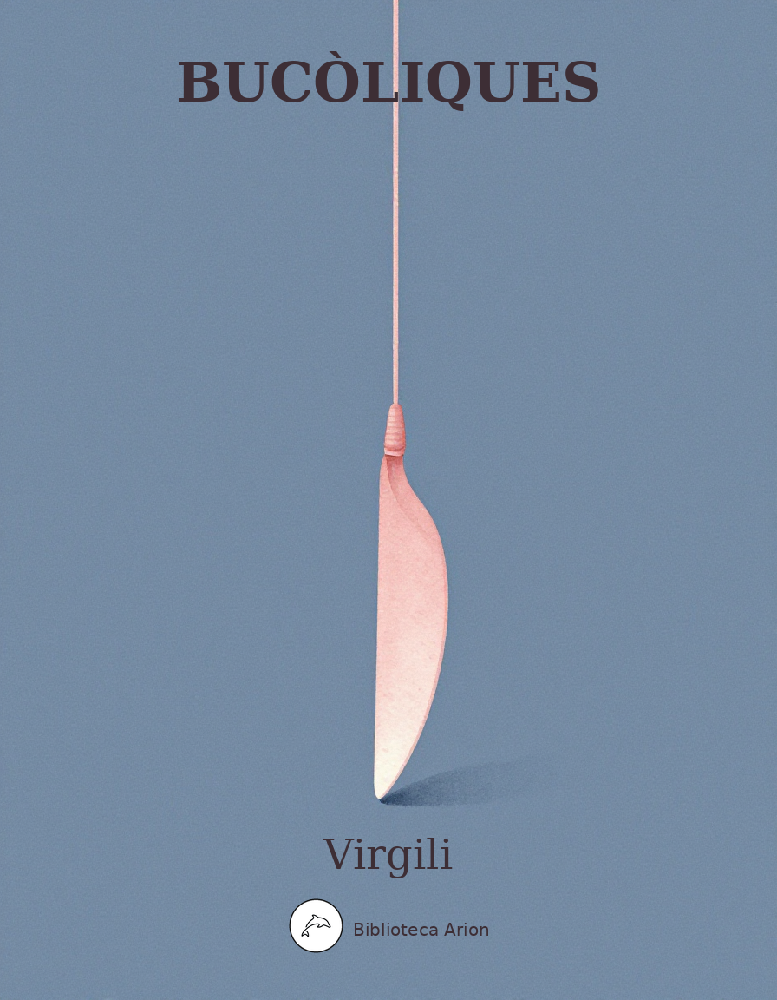

Bucòliques
Eclogae (Bucolica)
Deu poemes pastorals (èglogues) que establiren Virgili com a gran poeta llatí. Temes de vida rural, amor, exili i política.
Text llatí original (domini públic). Font: The Latin Library.
Ecloga I
Meliboeus
Tityre, tu patulae recubans sub tegmine fagi silvestrem tenui Musam meditaris avena; nos patriae fines et dulcia linquimus arva. nos patriam fugimus; tu, Tityre, lentus in umbra formosam resonare doces Amaryllida silvas.
Tityrus
O Meliboee, deus nobis haec otia fecit. namque erit ille mihi semper deus, illius aram saepe tener nostris ab ovilibus imbuet agnus. ille meas errare boves, ut cernis, et ipsum ludere quae vellem calamo permisit agresti.
Meliboeus
Non equidem invideo, miror magis; undique totis usque adeo turbatur agris. en ipse capellas protenus aeger ago; hanc etiam vix, Tityre, duco. hic inter densas corylos modo namque gemellos, spem gregis, a, silice in nuda conixa reliquit. saepe malum hoc nobis, si mens non laeva fuisset, de caelo tactas memini praedicere quercus. sed tamen iste deus qui sit da, Tityre,nobis.
Tityrus
Urbem quam dicunt Romam, Meliboee, putavi stultus ego huic nostrae similem, cui saepe solemus pastores ovium teneros depellere fetus. sic canibus catulos similes, sic matribus haedos noram, sic parvis componere magna solebam. verum haec tantum alias inter caput extulit urbes quantum lenta solent inter viburna cupressi.
Meliboeus
Et quae tanta fuit Romam tibi causa videndi?
Tityrus
Libertas, quae sera tamen respexit inertem, candidior postquam tondenti barba cadebat, respexit tamen et longo post tempore venit, postquam nos Amaryllis habet, Galatea reliquit. namque - fatebor enim - dum me Galatea tenebat, nec spes libertatis erat nec cura peculi. quamvis multa meis exiret victima saeptis pinguis et ingratae premeretur caseus urbi, non umquam gravis aere domum mihi dextra redibat.
Meliboeus
Mirabar quid maesta deos, Amarylli, vocares, cui pendere sua patereris in arbore poma. Tityrus hinc aberat. ipsae te, Tityre, pinus, ipsi te fontes, ipsa haec arbusta vocabant.
Tityrus
Quid facerem? neque servitio me exire licebat nec tam praesentis alibi cognoscere divos. hic illum vidi iuvenem, Meliboee, quot annis bis senos cui nostra dies altaria fumant, hic mihi responsum primus dedit ille petenti: ‘pascite ut ante boves, pueri, submittite tauros.’
Meliboeus
Fortunate senex, ergo tua rura manebunt et tibi magna satis, quamvis lapis omnia nudus limosoque palus obducat pascua iunco. non insueta gravis temptabunt pabula fetas nec mala vicini pecoris contagia laedent. fortunate senex, hic inter flumina nota et fontis sacros frigus captabis opacum; hinc tibi, quae semper, vicino ab limite saepes Hyblaeis apibus florem depasta salicti saepe levi somnum suadebit inire susurro; hinc alta sub rupe canet frondator ad auras, nec tamen interea raucae, tua cura, palumbes nec gemere aeria cessabit turtur ab ulmo.
Tityrus
Ante leves ergo pascentur in aethere cervi et freta destituent nudos in litore pisces, ante pererratis amborum finibus exsul aut Ararim Parthus bibet aut Germania Tigrim, quam nostro illius labatur pectore vultus.
Meliboeus
At nos hinc alii sitientis ibimus Afros, pars Scythiam et rapidum cretae veniemus Oaxen et penitus toto divisos orbe Britannos. en umquam patrios longo post tempore finis pauperis et tuguri congestum caespite culmen, post aliquot, mea regna, videns mirabor aristas? impius haec tam culta novalia miles habebit, barbarus has segetes. en quo discordia civis produxit miseros; his nos consevimus agros! insere nunc, Meliboee, piros, pone ordine vites. ite meae, felix quondam pecus, ite capellae. non ego vos posthac viridi proiectus in antro dumosa pendere procul de rupe videbo; carmina nulla canam; non me pascente, capellae, florentem cytisum et salices carpetis amaras.
Tityrus
Hic tamen hanc mecum poteras requiescere noctem fronde super viridi. sunt nobis mitia poma, castaneae molles et pressi copia lactis, et iam summa procul villarum culmina fumant maioresque cadunt altis de montibus umbrae.
Ecloga II
Formosum pastor Corydon ardebat Alexin, delicias domini, nec quid speraret habebat. tantum inter densas, umbrosa cacumina, fagos adsidue veniebat. ibi haec incondita solus montibus et silvis studio iactabat inani;
‘O crudelis Alexi, nihil mea carmina curas? nil nostri miserere? mori me denique cogis? nunc etiam pecudes umbras et frigora captant, nunc virides etiam occultant spineta lacertos, Thestylis et rapido fessis messoribus aestu alia serpyllumque herbas contundit olentis. at mecum raucis, tua dum vestigia lustro, sole sub ardenti resonant arbusta cicadis. nonne fuit satius tristis Amaryllidos iras atque superba pati fastidia? nonne Menalcan, quamvis ille niger, quamvis tu candidus esses? o formose puer, nimium ne crede colori; alba ligustra cadunt, vaccinia nigra leguntur.
Despectus tibi sum nec qui sim quaeris, Alexi, quam dives pecoris, nivei quam lactis abundans. mille meae Siculis errant in montibus agnae; lac mihi non aestate novum, non frigore defit. canto quae solitus, si quando armenta vocabat, Amphion Dircaeus in Actaeo Aracyntho. nec sum adeo informis; nuper me in litore vidi, cum placidum ventis staret mare. non ego Daphnin iudice te metuam, si numquam fallit imago.
O tantum libeat mecum tibi sordida rura atque humilis habitare casas et figere cervos haedorumque gregem viridi compellere hibisco! mecum una in silvis imitabere Pana canendo. Pan primum calamos cera coniungere pluris instituit, Pan curat ovis oviumque magistros; nec te paeniteat calamo trivisse labellum. haec eadem ut sciret, quid non faciebat Amyntas? est mihi disparibus septem compacta cicutis fistula, Damoetas dono mihi quam dedit olim et dixit moriens: ‘te nunc habet ista secundum’; dixit Damoetas, invidit stultus Amyntas. praeterea duo—nec tuta mihi valle reperti— capreoli sparsis etiam nunc pellibus albo, bina die siccant ovis ubera; quos tibi servo. iam pridem a me illos abducere Thestylis orat; et faciet, quoniam sordent tibi munera nostra.
Huc ades, o formose puer, tibi lilia plenis ecce ferunt Nymphae calathis; tibi candida Nais, pallentis violas et summa papavera carpens, narcissum et florem iungit bene olentis anethi; tum casia atque aliis intexens suavibus herbis mollia luteola pingit vaccinia caltha. ipse ego cana legam tenera lanugine mala castaneasque nuces, mea quas Amaryllis amabat; addam cerea pruna—honos erit huic quoque pomo— et vos, o lauri, carpam et te, proxime myrte, sic positae quoniam suavis miscetis odores.
Rusticus es, Corydon; nec munera curat Alexis nec, si muneribus certes, concedat Iollas. heu heu, quid volui misero mihi? floribus Austrum perditus et liquidis inmissi fontibus apros.
Quem fugis, a, demens? habitarunt di quoque silvas Dardaniusque Paris. Pallas quas condidit arces ipsa colat; nobis placeant ante omnia silvae. torva leaena lupum sequitur, lupus ipse capellam, florentem cytisum sequitur lasciva capella, te Corydon, o Alexi; trahit sua quemque voluptas.
Aspice, aratra iugo referunt suspensa iuvenci et sol crescentis decedens duplicat umbras. me tamen urit amor; quis enim modus adsit amori? a, Corydon, Corydon, quae te dementia cepit! semiputata tibi frondosa vitis in ulmo. quin tu aliquid saltem potius, quorum indiget usus, viminibus mollique paras detexere iunco? invenies alium, si te hic fastidit, Alexin.’
Ecloga III
Menalcas
Dic mihi, Damoeta, cuium pecus? An Meliboei?
Damoetas
Non, verum Aegonos; nuper mihi tradidit Aegon.
Menalcas
Infelix o semper, oves, pecus! ipse Neaeram dum fovet ac ne me sibi praeferat illa veretur, hic alienus ovis custos bis mulget in hora, et sucus pecori et lac subducitur agnis.
Damoetas
Parcius ista viris tamen obicienda memento. novimus et qui te transversa tuentibus hircis et quo—sed faciles Nymphae risere—sacello.
Menalcas
Tum, credo, cum me arbustum videre Miconos atque mala vitis incidere falce novellas.
Damoetas
Aut hic ad veteres fagos cum Daphnidos arcum fregisti et calamos, quae tu, perverse Menalca, et, cum vidisti puero donata, dolebas et, si non aliqua nocuisses, mortuus esses.
Menalcas
Quid domini faciant, audent cum talia fures? non ego te vidi Damonos, pessime, caprum excipere insidiis multum latrante Lycisca? et cum clamarem ‘quo nunc se proripit ille? Tityre, coge pecus’, tu post carecta latebas.
Damoetas
An mihi cantando victus non redderet ille, quem mea carminibus meruisset fistula caprum? si nescis, meus ille caper fuit; et mihi Damon ipse fatebatur sed reddere posse negabat.
Menalcas
Cantando tu illum? aut umquam tibi fistula cera iuncta fuit? non tu in triviis, indocte, solebas stridenti miserum stipula disperdere carmen?
Damoetas
Vis ergo inter nos quid possit uterque vicissim experiamur? ego hanc vitulam—ne forte recuses, bis venit ad mulctram, binos alit ubere fetus— depono; tu dic mecum quo pignore certes.
Menalcas
De grege non ausim quicquam deponere tecum. est mihi namque domi pater, est iniusta noverca, bisque die numerant ambo pecus, alter et haedos. verum, id quod multo tute ipse fatebere maius, insanire libet quoniam tibi, pocula ponam fagina, caelatum divini opus Alcimedontos, lenta quibus torno facili superaddita vitis diffusos hedera vestit pallente corymbos. in medio duo signa, Conon et—quis fuit alter, descripsit radio totum qui gentibus orbem, tempora quae messor, quae curvus arator haberet? necdum illis labra admovi, sed condita servo.
Damoetas
Et nobis idem Alcimedon duo pocula fecit et molli circum est ansas amplexus acantho Orpheaque in medio posuit silvasque sequentis; necdum illis labra admovi, sed condita servo. si ad vitulam spectas, nihil est quod pocula laudes.
Menalcas
Numquam hodie effugies; veniam quocumque vocaris. audiat haec tantum vel qui venit, ecce Palaemon. efficiam posthac ne quemquam voce lacessas.
Damoetas
Quin age, si quid habes; in me mora non erit ulla nec quemquam fugio. tantum, vicine Palaemon, sensibus haec imis—res est non parva—reponas.
Palaemon
Dicite, quandoquidem in molli consedimus herba. et nunc omnis ager, nunc omnis parturit arbos, nunc frondent silvae, nunc formosissimus annus. incipe, Damoeta; tu deinde sequere, Menalca. alternis dicetis; amant alterna Camenae.
Damoetas
Ab Iove principium Musae, Iovis omnia plena; ille colit terras, illi mea carmina curae.
Menalcas
Et me Phoebus amat; Phoebo sua semper apud me munera sunt, lauri et suave rubens hyacinthus.
Damoetas
Malo me Galatea petit, lasciva puella, et fugit ad salices et se cupit ante videri.
Menalcas
At mihi sese offert ultro meus ignis, Amyntas, notior ut iam sit canibus non Delia nostris.
Damoetas
Parta meae Veneri sunt munera; namque notavi ipse locum aeriae quo congessere palumbes.
Menalcas
Quod potui, puero silvestri ex arbore lecta aurea mala decem misi; cras altera mittam.
Damoetas
O quotiens et quae nobis Galatea locuta est! partem aliquam, venti, divom referatis ad auris.
Menalcas
Quid prodest quod me ipse animo non spernis, Amynta, si, dum tu sectaris apros, ego retia servo?
Damoetas
Phyllida mitte mihi; meus est natalis, Iolla, cum faciam vitula pro frugibus, ipse venito.
Menalcas
Phyllida amo ante alias; nam me discedere flevit et longum ‘formose, vale, vale,’ inquit, Iolla.
Damoetas
Triste lupus stabulis, maturis frugibus imbres, arboribus venti, nobis Amaryllidos irae.
Menalcas
Dulce satis umor, depulsis arbutus haedis, lenta salix feto pecori, mihi solus Amyntas.
Damoetas
Pollio amat nostram, quamvis est rustica, Musam; Pierides, vitulam lectori pascite vestro.
Menalcas
Pollio et ipse facit nova carmina; pascite taurum, iam cornu petat et pedibus qui spargat harenam.
Damoetas
Qui te, Pollio, amat veniat quo te quoque gaudet; mella fluant illi, ferat et rubus asper amomum.
Menalcas
Qui Bavium non odit, amet tua carmina, Mevi, atque idem iungat vulpes et mulgeat hircos.
Damoetas
Qui legitis flores et humi nascentia fraga, frigidus—o pueri, fugite hinc—latet anguis in herba.
Menalcas
Parcite, oves, nimium procedere; non bene ripae creditur; ipse aries etiam nunc vellera siccat.
Damoetas
Tityre, pascentis a flumine reice capellas; ipse, ubi tempus erit, omnis in fonte lavabo.
Menalcas
Cogite oves, pueri; si lac praeceperit aestus, ut nuper, frustra pressabimus ubera palmis.
Damoetas
Heu heu, quam pingui macer est mihi taurus in ervo! idem amor exitium pecori pecorisque magistro.
Menalcas
His certe—neque amor causa est—vix ossibus haerent; nescio quis teneros oculus mihi fascinat agnos.
Damoetas
Dic quibus in terris—et eris mihi magnus Apollo— tris pateat caeli spatium non amplius ulnas.
Menalcas
Dic quibus in terris inscripti nomina regum nascantur flores, et Phyllida solus habeto.
Palaemon
Non nostrum inter vos tantas componere lites: et vitula tu dignus et hic et quisquis amores aut metuet dulcis aut experietur amaros. claudite iam rivos, pueri; sat prata biberunt.
Ecloga IV
Sicelides Musae, paulo maiora canamus. non omnis arbusta iuvant humilesque myricae; si canimus silvas, silvae sint consule dignae.
Ultima Cumaei venit iam carminis aetas; magnus ab integro saeclorum nascitur ordo. iam redit et Virgo, redeunt Saturnia regna, iam nova progenies caelo demittitur alto. tu modo nascenti puero, quo ferrea primum desinet ac toto surget gens aurea mundo, casta fave Lucina; tuus iam regnat Apollo.
Teque adeo decus hoc aevi, te consule, inibit, Pollio, et incipient magni procedere menses; te duce, si qua manent sceleris vestigia nostri, inrita perpetua solvent formidine terras. ille deum vitam accipiet divisque videbit permixtos heroas et ipse videbitur illis pacatumque reget patriis virtutibus orbem.
At tibi prima, puer, nullo munuscula cultu errantis hederas passim cum baccare tellus mixtaque ridenti colocasia fundet acantho. ipsae lacte domum referent distenta capellae ubera nec magnos metuent armenta leones; ipsa tibi blandos fundent cunabula flores. occidet et serpens et fallax herba veneni occidet; Assyrium vulgo nascetur amomum.
At simul heroum laudes et facta parentis iam legere et quae sit poteris cognoscere virtus, molli paulatim flavescet campus arista incultisque rubens pendebit sentibus uva et durae quercus sudabunt roscida mella.
Pauca tamen suberunt priscae vestigia fraudis, quae temptare Thetin ratibus, quae cingere muris oppida, quae iubeant telluri infindere sulcos. alter erit tum Tiphys et altera quae vehat Argo delectos heroas; erunt etiam altera bella atque iterum ad Troiam magnus mittetur Achilles.
Hinc, ubi iam firmata virum te fecerit aetas, cedet et ipse mari vector nec nautica pinus mutabit merces; omnis feret omnia tellus. non rastros patietur humus, non vinea falcem, robustus quoque iam tauris iuga solvet arator; nec varios discet mentiri lana colores, ipse sed in pratis aries iam suave rubenti murice, iam croceo mutabit vellera luto, sponte sua sandyx pascentis vestiet agnos.
‘Talia saecla’ suis dixerunt ‘currite’ fusis concordes stabili fatorum numine Parcae.
Adgredere o magnos—aderit iam tempus—honores, cara deum suboles, magnum Iovis incrementum. aspice convexo nutantem pondere mundum, terrasque tractusque maris caelumque profundum; aspice, venturo laetantur ut omnia saeclo.
O mihi tum longae maneat pars ultima vitae, spiritus et quantum sat erit tua dicere facta: non me carminibus vincat nec Thracius Orpheus nec Linus, huic mater quamvis atque huic pater adsit, Orphei Calliopea, Lino formosus Apollo. Pan etiam, Arcadia mecum si iudice certet, Pan etiam Arcadia dicat se iudice victum.
Incipe, parve puer, risu cognoscere matrem; matri longa decem tulerunt fastidia menses. incipe, parve puer. qui non risere parenti, nec deus hunc mensa dea nec dignata cubili est.
Ecloga V
Menalcas
Cur non, Mopse, boni quoniam conuenimus ambo tu calamos inflare leuis, ego dicere uersus, hic corylis mixtas inter consedimus ulmos?
Mopsus
Tu maior; tibi me est aequom parere, Menalca, siue sub incertas Zephyris motantibus umbras, siue antro potius succedimus. Aspice ut antrum siluestris raris sparsit labrusca racemis.
Menalcas
Montibus in nostris solus tibi certat Amyntas.
Mopsus
Quid, si idem certet Phoebum superare canendo?
Menalcas
Incipe, Mopse, prior, si quos aut Phyllidis ignis aut Alconis habes laudes aut iurgia Codri; incipe; pascentis seruabit Tityrus haedos.
Mopsus
Immo haec in uiridi nuper quae cortice fagi carmina descripsi et modulans alterna notaui, experiar: tu deinde iubeto certet Amyntas.
Menalcas
Lenta salix quantum pallenti cedit oliuae, puniceis humilis quantum saliunca rosetis, iudicio nostro tantum tibi cedit Amyntas. Sed tu desine plura, puer; successimus antro.
Mopsus
Exstinctum Nymphae crudeli funere Daphnim flebant (uos coryli testes et flumina Nymphis), cum complexa sui corpus miserabile nati atque deos atque astra uocat crudelia mater. Non ulli pastos illis egere diebus frigida, Daphni, boues ad flumina: nulla neque amnem libauit quadrupes, nec graminis attigit herbam. Daphni, tuom Poenos etiam ingemuisse leones interitum montesque feri siluaque loquontur. Daphnis et Armenias curru subiungere tigris instituit; Daphnis thiasos inducere Bacchi, et foliis lentas intexere mollibus hastas. Vitis ut arboribus decori est, ut uitibus uuae, ut gregibus tauri, segetes ut pinguibus aruis, tu decus omne tuis. Postquam te fata tulerunt, ipsa Pales agros atque ipse reliquit Apollo. Grandia saepe quibus mandauimus hordea sulcis, infelix lolium et steriles nascuntur auenae; pro molli uiola, pro purpureo narcisso carduos et spinis surgit paliurus acutis. Spargite humum foliis, inducite fontibus umbras, pastores (mandat fieri sibi talia Daphnis), et tumulum facite, et tumulo superaddite carmen: Daphnis ego in siluis hinc usque ad sidera notus formosi pecoris custos formosior ipse.
Menalcas
Tale tuom carmen nobis, diuine poeta, quale sopor fessis in gramine, quale per aestum dulcis aquae saliente sitim restinguere riuo. Nec calamis solum aequiperas, sed uoce magistrum; fortunate puer, tu nunc eris alter ab illo. Nos tamen haec quocumque modo tibi nostra uicissim dicemus, Daphnimque tuom tollemus ad astra; Daphnim ad astra feremus: amauit nos quoque Daphnis.
Mopsus
An quicquam nobis tali sit munere maius? Et puer ipse fuit cantari dignus, et ista iam pridem Stimichon laudauit carmina nobis.
Menalcas
Candidus insuetum miratur limen Olympi sub pedibus uidet nubes et sidera Daphnis. Ergo alacris siluas et cetera rura uoluptas Panaque pastoresque tenet Dryadasque puellas. Nec lupus insidias pecori, nec retia ceruis ulla dolum meditantur: amat bonus otia Daphnis. Ipsi laetitia uoces ad sidera iactant intonsi montes; ipsae iam carmina rupes, ipsa sonant arbusta: “Deus, deus ille, Menalca!” Sis bonus o felixque tuis! En quattuor aras: ecce duas tibi, Daphni, duas altaria Phoebo. Pocula bina nouo spumantia lacte quotannis, craterasque duo statuam tibi pinguis oliui, et multo in primis hilarans conuiuia Baccho, ante focum, si frigus erit, si messis, in umbra, uina nouom fundam calathis Ariusia nectar. Cantabunt mihi Damoetas et Lyctius Aegon; saltantis Satyros imitabitur Alphesiboeus. Haec tibi semper erunt, et cum sollemnia uota reddemus Nymphis, et cum lustrabimus agros. Dum iuga montis aper, fluuios dum piscis amabit, dumque thymo pascentur apes, dum rore cicadae, semper honos nomenque tuom laudesque manebunt. Vt Baccho Cererique, tibi sic uota quotannis agricolae facient: damnabis tu quoque uotis.
Mopsus
Quae tibi, quae tali reddam pro carmine dona? Nam neque me tantum uenientis sibilus Austri nec percussa iuuant fluctu tam litora, nec quae saxosas inter decurrunt flumina ualles.
Menalcas
Hac te nos fragili donabimus ante cicuta: haec nos “Formosum Corydon ardebat Alexim”, haec eadem docuit “Cuium pecus? an Meliboei?”
Mopsus
At tu sume pedum, quod, me cum saepe rogaret, non tulit Antigenes (et erat tum dignus amari), formosum paribus nodis atque aere, Menalca.
Ecloga VI
Prima Syracosio dignata est ludere uersu nostra, neque erubuit siluas habitare, Thalia. Cum canerem reges et proelia, Cynthius aurem uellit, et admonuit: “Pastorem, Tityre, pinguis pascere oportet ouis, deductum dicere carmen.” Nunc ego (namque super tibi erunt, qui dicere laudes, Vare, tuas cupiant, et tristia condere bella) agrestem tenui meditabor harundine musam. Non iniussa cano. Si quis tamen haec quoque, si quis captus amore leget, te nostrae, Vare, myricae, te nemus omne canet; nec Phoebo gratior ulla est quam sibi quae Vari praescripsit pagina nomen. Pergite, Pierides. Chromis et Mnasylus in antro Silenum pueri somno uidere iacentem, inflatum hesterno uenas, ut semper, Iaccho; serta procul tantum capiti delapsa iacebant, et grauis attrita pendebat cantharus ansa. Adgressi (nam saepe senex spe carminis ambo luserat) iniciunt ipsis ex uincula sertis. Addit se sociam timidisque superuenit Aegle. Aegle, Naiadum pulcherrima, iamque uidenti sanguineis frontem moris et tempora pingit. Ille dolum ridens: “Quo uincula nectitis?” inquit. “Soluite me, pueri; satis est potuisse uideri. Carmina quae uoltis cognoscite; carmina uobis, huic aliud mercedis erit.” Simul incipit ipse. Tum uero in numerum Faunosque ferasque uideres ludere, tum rigidas motare cacumina quercus. Nec tantum Phoebo gaudet Parnasia rupes, nec tantum Rhodope miratur et Ismarus Orphea. Namque canebat uti magnum per inane coacta semina terrarumque animaeque marisque fuissent et liquidi simul ignis; ut his exordia primis omnia, et ipse tener mundi concreuerit orbis; tum durare solum et discludere Nerea ponto coeperit, et rerum paulatim sumere formas; iamque nouom terrae stupeant lucescere solem, altius atque cadant submotis nubibus imbres, incipiant siluae cum primum surgere, cumque rara per ignaros errent animalia montis. Hinc lapides Pyrrhae iactos, Saturnia regna, Caucasiasque refert uolucris, furtumque Promethei. His adiungit Hylan nautae quo fonte relictum clamassent, ut litus Hyla, Hyla, omne sonaret; et fortunatam, si numquam armenta fuissent, Pasiphaen niuei solatur amore iuuenci. A! uirgo infelix, quae te dementia cepit! Proetides implerunt falsis mugitibus agros; at non tam turpis pecudum tamen ulla secuta concubitus, quamuis collo timuisset aratrum, et saepe in leui quaesisset cornua fronte. A! uirgo infelix, tu nunc in montibus erras: ille, latus niueum molli fultus hyacintho, ilice sub nigra pallentis ruminat herbas, aut aliquam in magno sequitur grege. “Claudite Nymphae, Dictaeae Nymphae, nemorum iam claudite saltus, si qua forte ferant oculis sese obuia nostris errabunda bouis uestigia: forsitan illum aut herba captum uiridi aut armenta secutum perducant aliquae stabula ad Cortynia uaccae.” Tum canit Hesperidum miratam mala puellam; tum Phaethontiadas musco circundat amarae corticis, atque solo proceras erigit alnos. Tum canit, errantem Permessi ad flumina Gallum Aonas in montis ut duxerit una sororum, utque uiro Phoebi chorus adsurrexerit omnis; ut Linus haec illi diuino carmine pastor, floribus atque apio crinis ornatus amaro, dixerit: “Hos tibi dant calamos, en accipe, Musae, Ascraeo quos ante seni; quibus ille solebat cantando rigidas deducere montibus ornos. His tibi Grynei nemoris dicatur origo, ne quis sit lucus quo se plus iactet Apollo.” Quid loquar aut Scyllam Nisi, quam fama secuta est candida succinctam latrantibus inguina monstris Dulichias uexasse rates, et gurgite in alto, a, timidos nautas canibus lacerasse marinis, aut ut mutatos Terei narrauerit artus, quas illi Philomela dapes, quae dona pararit, quo cursu deserta petiuerit, et quibus ante infelix sua tecta super uolitauerit alis? Omnia, quae Phoebo quondam meditante beatus audiit Eurotas iussitque ediscere laurus, ille canit (pulsae referunt ad sidera ualles), cogere donec ouis stabulis numerumque referre iussit et inuito processit Vesper Olympo.
Ecloga VII
Meliboeus
Forte sub arguta consederat ilice Daphnis, compulerantque greges Corydon et Thyrsis in unum, Thyrsis ouis, Corydon distentas lacte capellas, ambo florentes aetatibus, Arcades ambo, et cantare pares et repondere parati. Huc mihi, dum teneras defendo a frigore myrtos, uir gregis ipse caper deerrauerat; atque ego Daphnim adspicio. Ille ubi me contra uidet: “Ocius” inquit “huc ades, o Meliboee; caper tibi saluos et haedi, et, si quid cessare potes, requiesce sub umbra. Huc ipsi potum uenient per prata iuuenci; hic uiridis tenera praetexit harundine ripas Mincius, eque sacra resonant examina quercu.” Quid facerem? Neque ego Alcippen, nec Phyllida habebam, depulsos a lacte domi quae clauderet agnos, et certamen erat, Corydon cum Thyrside, magnum. Posthabui tamen illorum mea seria ludo. Alternis igitur contendere uersibus ambo coepere; alternos Musae meminisse uolebant. Hos Corydon, illos referebat in ordine Thyrsis.
Corydon
Nymphae, noster amor, Libethrides, aut mihi carmen, quale meo Codro, concedite (proxima Phoebi uersibus ille facit), aut, si non possumus omnes, hic arguta sacra pendebit fistula pinu.
Thyrsis
Pastores, hedera nascentem ornate poetam, Arcades, inuidia rumpantur ut ilia Codro; aut, si ultra placitum laudarit, baccare frontem cingite, ne uati noceat mala lingua futuro.
Corydon
Saetosi caput hoc apri tibi, Delia, paruos et ramosa Micon uiuacis cornua cerui. Si proprium hoc fuerit, leui de marmore tota puniceo stabis suras euincta coturno.
Thyrsis
Sinum lactis et haec te liba, Priape, quotannis exspectare sat est: custos es pauperis horti. Nunc te marmoreum pro tempore fecimus; at tu, si fetura gregem suppleuerit, aureus esto.
Corydon
Nerine Galatea, thymo mihi dulcior Hyblae, candidior cycnis, hedera formosior alba, cum primum pasti repetent praesepia tauri, si qua tui Corydonis habet te cura, uenito.
Thyrsis
Immo ego Sardoniis uidear tibi amarior herbis horridior rusco, proiecta uilior alga, si mihi non haec lux toto iam longior anno est. Ite domum pasti, si quis pudor, ite, iuuenci.
Corydon
Muscosi fontes, et somno mollior herba, et quae uos rara uiridis tegit arbutus umbra, solstitium pecori defendite: iam uenit aestas torrida, iam lento turgent in palmite gemmae.
Thyrsis
Hic focus et taedae pingues, hic plurimus ignis semper, et adsidua postes fuligine nigri; hic tantum Boreae curamus frigora, quantum aut numerum lupus aut torrentia flumina ripas.
Corydon
Stant et iuniperi et castaneae hirsutae; strata iacent passim sua quaeque sub arbore poma; omnia nunc rident: at, si formosus Alexis montibus his abeat, uideas et flumina sicca.
Thyrsis
Aret ager; uitio moriens sitit aeris herba; Liber pampineas inuidit collibus umbras: Phyllidis aduentu nostrae nemus omne uirebit, Iuppiter et laeto descendet plurimus imbri.
Corydon
Populus Alcidae gratissima, uitis Iaccho, formosae myrtus Veneri, sua laurea Phoebo, Phyllis amat corylos; illas dum Phyllis amabit, nec myrtus uincet corylos, nec laurea Phoebi.
Thyrsis
Fraxinus in siluis pulcherrima, pinus in hortis, populus in fluuiis, abies in montibus altis: saepius at si me, Lycida formose, reuisas, fraxinus in siluis cedat tibi, pinus in hortis.
Meliboeus
Haec memini, et uictum frustra contendere Thyrsim. Ex illo Corydon Corydon est tempore nobis.
Ecloga VIII
Pastorum musam Damonis et Alphesiboei, immemor herbarum quos est mirata iuuenca certantis, quorum stupefactae carmine lynces, et mutata suos requierunt flumina cursus, Damonis musam dicemus et Alphesiboei. Tu mihi seu magni superas iam saxa Timaui, siue oram Illyrici legis aequoris, en erit umquam ille dies, mihi cum liceat tua dicere facta? En erit, ut liceat totum mihi ferre per orbem sola Sophocleo tua carmina digna coturno? A te principium; tibi desinet: accipe iussis carmina coepta tuis, atque hanc sine tempora circum inter uictricis hederam tibi serpere laurus. Frigida uix caelo noctis decesserat umbra, cum ros in tenera pecori gratissimus herba, incumbens tereti Damon sic coepit oliuae: “Nascere, praeque diem ueniens age, Lucifer, almum, coniugis indigno Nysae deceptus amore dum queror, et diuos, quamquam nil testibus illis profeci, extrema moriens tamen adloquor hora.
Incipe Maenalios mecum, mea tibia, uersus.
Maenalus argutumque nemus pinosque loquentis semper habet; semper pastorum ille audit amores Panaque, qui primus calamos non passus inertis.
Incipe Maenalios mecum, mea tibia, uersus.
Mopso Nysa datur: quid non speremus amantes? Iungentur iam grypes equis, aeuoque sequenti cum canibus timidi ueniet ad pocula dammae.
Incipe Maenalios mecum, mea tibia, uersus.
28a
Mopse, nouas incide faces: tibi ducitur uxor; sparge, marite, nuces: tibi deserit Hesperus Oetam.
Incipe Maenalios mecum, mea tibia, uersus.
O digno coniuncta uiro, dum despicis omnis, dumque tibi est odio mea fistula dumque capellae hirsutumque supercilium promissaque barba, nec curare deum credis mortalia quemquam!
Incipe Maenalios mecum, mea tibia, uersus.
Saepibus in nostris paruam te roscida mala (dux ego uester eram) uidi cum matre legentem; alter ab undecimo tum me iam acceperat annus; iam fragilis poteram a terra contingere ramos: ut uidi, ut perii, ut me malus abstulit error!
Incipe Maenalios mecum, mea tibia, uersus.
Nunc scio quid sit Amor: duris in cautibus illum aut Tmaros aut Rhodope aut extremi Garamantes nec generis nostri puerum nec sanguinis edunt.
Incipe Maenalios mecum, mea tibia, uersus.
Saeuos Amor docuit natorum sanguine matrem commaculare manus; crudelis tu quoque, mater: crudelis mater magis, an puer improbus ille? Improbus ille puer; crudelis tu quoque, mater.
Incipe Maenalios mecum, mea tibia, uersus.
Nunc et ouis ultro fugiat lupus; aurea durae mala ferant quercus, narcisso floreat alnus, pinguia corticibus sudent electra myricae, certent et cycnis ululae, sit Tityrus Orpheus, Orpheus in siluis, inter delphinas Arion.
Incipe Maenalios mecum, mea tibia, uersus.
Omnia uel medium fiat mare. Viuite, siluae: praeceps aerii specula de montis in undas deferar; extremum hoc munus morientis habeto.
Desine Maenalios, iam desine, tibia, uersus.”
Haec Damon. Vos, quae responderit Alphesiboeus, ducite, Pierides: non omnia possumus omnes. “Effer aquam, et molli cinge haec altaria uitta, uerbenasque adole pinguis et mascula tura, coniugis ut magicis sanos auertere sacris experiar sensus: nihil hic nisi carmina desunt.
Ducite ab urbe domum, mea carmina, ducite Daphnim.
Carmina uel caelo possunt deducere lunam; caminibus Circe socios mutauit Vlixi; frigidus in pratis cantando rumpitur anguis.
Ducite ab urbe domum, mea carmina, ducite Daphnim.
Terna tibi haec primum triplici diuersa colore licia circumdo, terque haec altaria circum effigiem duco: numero deus impare gaudet.
Ducite ab urbe domum, mea carmina, ducite Daphnim.
Necte tribus nodis ternos, Amarylli, colores; necte, Amarylli, modo et “Veneris” dic “uincula necto”.
Ducite ab urbe domum, mea carmina, ducite Daphnim.
Limus ut hic durescit, et haec ut cera liquescit uno eodemque igni, sic nostro Daphnis amore. Sparge molam et fragilis incende bitumine laurus. Daphnis me malus urit; ego hanc in Daphnide laurum.
Ducite ab urbe domum, mea carmina, ducite Daphnim.
Talis amor Daphnim, qualis cum fessa iuuencum per nemora atque altos quaerendo bucula lucos, propter aquae riuom, uiridi procumbit in ulua perdita, nec serae meminit decedere nocti, talis amor teneat, nec sit mihi cura mederi. Ducite ab urbe domum, mea carmina, ducite Daphnim.
Has olim exuuias mihi perfidus ille reliquit, pignora cara sui; quae nunc ego limine in ipso, terra, tibi mando: debent haec pignora Daphnim.
Ducite ab urbe domum, mea carmina, ducite Daphnim.
Has herbas atque haec Ponto mihi lecta uenena ipse dedit Moeris (nascuntur pluruma Ponto); his ego saepe lupum fieri et se condere siluis Moerim, saepe animas imis excire sepulcris, atque satas alio uidi traducere messis.
Ducite ab urbe domum, mea carmina, ducite Daphnim.
Fer cineres, Amarylli, foras, riuoque fluenti transque caput iace, nec respexeris. His ego Daphnim adgrediar; nihil ille deos, nil carmina curat.
Ducite ab urbe domum, mea carmina, ducite Daphnim.
Aspice: corripuit tremulis altaria flammis sponte sua, dum ferre moror, cinis ipse. Bonum sit! Nescio quid certe est, et Hylax in limine latrat. Credimus? an qui amant ipsi sibi somnia fingunt?
Parcite, ab urbe uenit, iam parcite, carmina, Daphnis.”
Ecloga IX
Lycidas
Quo te, Moeri, pedes? An, quo uia ducit, in urbem?
Moeris
O Lycida, uiui peruenimus, aduena nostri (quod nunquam ueriti sumus) ut possessor agelli diceret: “Haec mea sunt; ueteres migrate coloni.” Nunc uicti, tristes, quoniam fors omnia uersat, hos illi (quod nec uertat bene!) mittimus haedos.
Lycidas
Certe equidem audieram, qua se subducere colles incipiunt mollique iugum demittere cliuo, usque ad aquam et ueteres, iam fracta cacumina, fagos, omnia carminibus uestrum seruasse Menalcan.
Moeris
Audieras, et fama fuit; sed carmina tantum nostra ualent, Lycida, tela inter Martia, quantum Chaonias dicunt aquila ueniente columbas. Quod nisi me quacumque nouas incidere litis ante sinistra caua monuisset ab ilice cornix, nec tuos hic Moeris nec uiueret ipse Menalcas.
Lycidas
Heu! Cadit in quemquam tantum scelus? Heu! Tua nobis paene simul tecum solacia rapta, Menalca? Quis caneret Nymphas? Quis humum florentibus herbis spargeret, aut uiridi fontis induceret umbra? uel quae sublegi tacitus tibi carmina nuper, cum te ad delicias ferres Amaryllida nostras? “Tityre, dum redeo (breuis est uia) pasce capellas; et potum pastas age, Tityre, et inter agendum occursare capro (cornu ferit ille) caueto.”
Moeris
Immo haec quae Varo, necdum perfecta, canebat: “Vare, tuom nomen, superet modo Mantua nobis, Mantua uae miserae nimium uicina Cremonae, cantantes sublime ferent ad sidera cycni.”
Lycidas
Sic tua Cyrneas fugiant examina taxos, sic cytiso pastae distendant ubera uaccae, incipe, si quid habes. Et me fecere poetam Pierides; sunt et mihi carmina; me quoque dicunt uatem pastores: sed non ego credulus illis; nam neque adhuc Vario uideor nec dicere Cinna digna, sed argutos inter strepere anser olores.
Moeris
Id quidem ago et tacitus, Lycida, mecum ipse uoluto, si ualeam meminisse; neque est ignobile carmen: “Huc ades, o Galarea: quis est nam ludus in undis? Hic uer purpureum, uarios hic flumina circum fundit humus flores; hic candida populus antro imminet et lentae texunt umbracula uites. Huc ades; insani feriant sine litora fluctus.”
Lycidas
Quid, quae te pura solum sub nocte canentem audieram? Numeros memini, si uerba tenerem: “Daphni, quid antiquos signorum suspicis ortus? Ecce Dionaei processit Caesaris astrum, astrum quo segetes gauderent frugibus et quo duceret apricis in collibus uua colorem. Insere, Daphni, piros: carpent tua poma nepotes.”
Moeris
Omnia fert aetas, animum quoque; saepe ego longos cantando puerum memini me condere soles: nunc oblita mihi tot carmina, uox quoque Moerim iam fugit ipsa: lupi Moerim uidere priores. Sed tamen ista satis referet tibi saepe Menalcas.
Lycidas
Causando nostros in longum ducis amores. Et nunc omne tibi stratum silet aequor, et omnes, aspice, uentosi ceciderunt murmuris aurae. Hinc adeo media est nobis uia; namque sepulcrum incipit apparere Bianoris. Hic, ubi densas agricolae stringunt frondis, hic, Moeri, canamus: hic haedos depone, tamen ueniemus in urbem. Aut, si nox pluuiam ne colligat ante ueremur, cantantes licet usque (minus uia laedit) eamus: cantantes ut eamus, ego hoc te fasce leuabo.
Moeris
Desine plura, puer, et quod nunc instat agamus. Carmina tum melius, cum uenerit ipse, canemus.
Ecloga X
Extremum hunc, Arethusa, mihi concede laborem: pauca meo Gallo, sed quae legat ipsa Lycoris, carmina sunt dicenda: neget quis carmina Gallo? Sic tibi, cum fluctus subterlabere Sicanos, Doris amara suam non intermisceat undam; incipe; sollicitos Galli dicamus amores, dum tenera attondent simae uirgulta capellae. Non canimus surdis: respondent omnia siluae. Quae nemora aut qui uos saltus habuere, puellae Naides, indigno cum Gallus amore peribat? Nam neque Parnasi uobis iuga, nam neque Pindi ulla moram fecere, neque Aonie Aganippe. Illum etiam lauri, etiam fleuere myricae; pinifer illum etiam sola sub rupe iacentem Maenalus et gelidi fleuerunt saxa Lycaei. Stant et oues circum (nostri nec paenitet illas, nec te paeniteat pecoris, diuine poeta: et formosus ouis ad flumina pauit Adonis); uenit et upilio; tardi uenere subulci; uuidus hiberna uenit de glande Menalcas. Omnes “Vnde amor iste” rogant “tibi?” Venit Apollo: “Galle, quid insanis?” inquit; “tua cura Lycoris perque niues alium perque horrida castra secuta est.” Venit et agresti capitis Siluanus honore, florentis ferulas et grandia lilia quassans. Pan deus Arcadiae uenit, quem uidimus ipsi sanguineis ebuli bacis minioque rubentem: “Ecquis erit modus?” inquit “Amor non talia curat, nec lacrimis crudelis Amor nec gramina riuis nec cytiso saturantur apes nec fronde capellae.” Tristis at ille: “Tamen cantabitis, Arcades, inquit, montibus haec uestris, soli cantare periti Arcades. O mihi tum quam molliter ossa quiescant, uestra meos olim si fistula dicat amores! Atque utinam ex uobis unus uestrisque fuissem aut custos gregis aut maturae uinitor uuae! Certe siue mihi Phyllis siue esset Amyntas, seu quicumque furor (quid tum, si fuscus Amyntas? et nigrae uiolae sunt et uaccinia nigra), mecum inter salices lenta sub uite iaceret: serta mihi Phyllis legeret, cantaret Amyntas. “Hic gelidi fontes, hic mollia prata, Lycori; hic nemus; hic ipso tecum consumerer aeuo. Nunc insanus amor duri me Martis in armis tela inter media atque aduersos detinet hostis. Tu procul a patria (nec sit mihi credere tantum) Alpinas, a, dura, niues et frigora Rheni me sine sola uides. A, te ne frigora laedant! a, tibi ne teneras glacies secet aspera plantas! Ibo et Chalcidico quae sunt mihi condita uersu carmina pastoris Siculi modulabor auena. Certum est in siluis inter spelaea ferarum malle pati tenerisque meos incidere Amores arboribus: crescent illae, crescetis, Amores. Interea mixtis lustrabo Maenala Nymphis, aut acris uenabor apros; non me ulla uetabunt frigora Parthenios canibus circumdare saltus. Iam mihi per rupes uideor lucosque sonantis ire; libet Partho torquere Cydonia cornu spicula; tamquam haec sit nostri medicina furoris, aut deus ille malis hominum mitescere discat! Iam neque Hamadryades rursus nec carmina nobis ipsa placent; ipsae rursus concedite, siluae. Non illum nostri possunt mutare labores, nec si frigoribus mediis Hebrumque bibamus, Sithoniasque niues hiemis subeamus aquosae, nec si, cum moriens alta liber aret in ulmo, Aethiopum uersemus ouis sub sidere Cancri. Omnia uincit Amor: et nos cedamus Amori.” Haec sat erit, diuae, uestrum cecinisse poetam, dum sedet et gracili fiscellam texit hibisco, Pierides: uos haec facietis maxima Gallo, Gallo, cuius amor tantum mihi crescit in horas, quantum uere nouo uiridis se subicit alnus. Surgamus: solet esse grauis cantantibus umbra, iuniperi grauis umbra; nocent et frugibus umbrae. Ite domum saturae, uenit Hesperus, ite, capellae.
Bucòliques
Publi Virgili Maró
Traduït del llatí per Biblioteca Arion
Ègloga I
Melibeu
Títir, tu, ajagut sota l’ombra d’un faig estès, medites la Musa silvestre amb una prima avena; nosaltres deixem les fronteres de la pàtria i els dolços camps. Nosaltres fugim de la pàtria; tu, Títir, plàcid a l’ombra, ensenyes els boscos a fer ressonar el nom de la bella Amaril·lis.
Títir
Oh Melibeu, un déu ens ha fet aquest oci. Perquè aquell serà per a mi sempre un déu, el seu altar sovint el banyarà amb sang un tendre anyell dels nostres corrals. Ell ha permès que les meves vaques vaguessin, com veus, i que jo mateix toqués amb la canya rústica el que volgués.
Melibeu
No t’envejo, certament, sinó que m’admiro; tanta és la pertorbació per tots els camps. Mira, jo mateix, malalt, meno les cabres endavant; aquesta, Títir, amb prou feines la puc dur. Aquí, entre els avellaners espessos, tot just ha parit bessons, esperança del ramat, ai, sobre la roca nua. Sovint, si no haguéssim tingut el seny tort, recordo que els roures tocats pel llamp ens predien aquest mal. Però digues-nos, Títir, qui és aquest déu.
Títir
La ciutat que en diuen Roma, Melibeu, jo me la pensava, neci de mi, semblant a la nostra, on solem els pastors menar les tendres cries de les ovelles. Així sabia que els cadells s’assemblaven als gossos, els cabrits a les mares, així solia comparar les coses grans amb les petites. Però aquesta ciutat ha alçat el cap entre les altres ciutats tant com els xiprers solen alçar-se entre els flexibles viburns.
Melibeu
I quin motiu tan gran tingueres per veure Roma?
Títir
La Llibertat, que, encara que tard, va mirar el mandrós, quan ja em queia la barba més blanca en tallar-la, va mirar-me, però, i al cap de molt de temps va venir, després que Amaril·lis m’ha pres i Galatea m’ha deixat. Perquè —ho confessaré— mentre Galatea em tenia, ni hi havia esperança de llibertat ni preocupació pels estalvis. Per més que sortissin moltes víctimes dels meus corrals, grasses, i es premés formatge per a la ciutat ingrata, mai la meva mà no tornava a casa carregada de diners.
Melibeu
M’estranyava, Amaril·lis, per què invocaves tristament els déus, per a qui deixaves penjant els fruits al seu arbre. Títir n’era absent. Els mateixos pins, Títir, les mateixes fonts, els mateixos arbustos et cridaven.
Títir
Què havia de fer? No em podia alliberar de la servitud ni conèixer déus tan presents en cap altre lloc. Aquí vaig veure aquell jove, Melibeu, per a qui cada any els nostres altars fumen dotze dies, aquí em va donar ell primer la resposta que demanava: ‘Pastureu com abans els bous, nois, crieu els braus.’
Melibeu
Vell afortunat, doncs les teves terres et quedaran, i prou grans per a tu, encara que la pedra nua i el pantà amb el seu jonc llimós cobreixin els pasturatges. Cap pastura estranya no temptarà les ovelles prenyades, ni les contagiaran les malalties del ramat veí. Vell afortunat, aquí entre rius coneguts i fonts sagrades cercaràs la fresca ombra; d’aquí, com sempre, la bardissa del límit veí, pasturada per les abelles d’Hibla en la flor del salze, sovint t’invitarà a adormir-te amb el seu suau brunzit; d’aquí, sota l’alt penyal, el podador cantarà a l’aire, i mentrestant les teves estimades tórtores rauques no deixaran de gemegar, ni el tudó des de l’alt om.
Títir
Doncs abans pasturaran els cérvols lleugers pel cel, i els mars deixaran els peixos nus a la riba, abans l’exiliat, havent recorregut les fronteres d’ambdós, el part beurà de l’Arar o Germània del Tigris, que no s’esborri del nostre cor el seu rostre.
Melibeu
Però nosaltres, d’aquí, uns anirem als àrids africans, d’altres a Escítia i al ràpid Oaxes de Creta, i als britans, del tot separats del món. Podré veure mai, després de molt de temps, les fronteres pàtries, i el sostre cobert d’herba de la meva pobre cabana, i admirar-me, després d’unes quantes collites, dels meus regnes? Un soldat impiu tindrà aquests camps tan conreats, un bàrbar aquestes messes. Mira on ha portat la discòrdia els desgraciats ciutadans; per a ells hem sembrat els camps! Empelta ara, Melibeu, les pereres, posa en filera les vinyes. Aneu, cabres meves, ramat antany feliç, aneu. Jo no us veuré ja més, ajagut en una cova verda, penjant lluny del cingle ple de mates; no cantaré cap cançó; no pasturant jo, cabres, no brosareu el cítis florit ni els salzes amargs.
Títir
Tanmateix, aquesta nit podies reposar amb mi aquí, sobre el fullam verd. Tenim fruita madura, castanyes tendres i formatge fresc en abundància, i ja al lluny fumen les teulades de les masies, i cauen ombres més grans des de les altes muntanyes.
Ègloga II
El pastor Coridó s’abraçava d’amor pel bell Alexis, les delícies del seu amo, i no tenia cap esperança. Només venia contínuament entre els faigs espessos, de copes ombrívoles. Allí, sol, aquestes paraules desordenades llançava als monts i als boscos amb un esforç inútil:
‘Oh cruel Alexis, no fas cas dels meus cants? No tens pietat de mi? Al capdavall em forces a morir. Ara fins les bèsties busquen les ombres i la frescor, ara fins els llangardaixos verds s’amaguen entre les espines, i Tèstilis, per als segadors esgotats per la calor violenta, tritura l’all i el serpoll, herbes oloroses. Però amb mi, mentre segueixo les teves petjades, sota el sol ardent ressonen els arbustos amb les cigales rauques. No hauria estat millor suportar les ires tristes d’Amaril·lis i els seus desdenyaments superbs? O potser Menalcas, per més que ell fos moreno i tu ros? Oh bell noi, no confiïs massa en el color: els lligaboscos blancs cauen, les nabius negres es cullen.
Em menysprees i no preguntes qui sóc, Alexis, quant ric en bestiar, quant abundós de llet blanca. Mil anyelles meves vaguegen pels monts de Sicília; no em falta llet fresca ni a l’estiu ni a l’hivern. Canto el que solia cantar, quan cridava els ramats, Amfió de Dirce a l’Aracint acteu. No sóc pas tan lleig; fa poc em vaig veure a la riba, quan la mar estava quieta sense vent. No temeria Dafnis si tu en fossis jutge, si mai no enganya el reflex.
Oh si només et plagués viure amb mi als camps humils i habitar cabanes modestes i caçar cérvols, i menar el ramat de cabrits amb el verd hibiscus! Amb mi als boscos imitaràs Pan cantant. Pan va ser el primer a unir moltes canyes amb cera, Pan vetlla per les ovelles i els pastors; que no et dolgui gastar-te els llavis amb la canya. Per saber això mateix, què no feia Amintes? Tinc una flauta de set canyes desiguals que Damoetas em va donar fa temps com a present i en morir va dir: ‘ara tu en seràs el segon amo’; ho va dir Damoetas, l’enze d’Amintes se’n va fer enveja. A més, dos cabirolls —trobats en una vall perillosa— amb la pell encara tacada de blanc, eixuguen cada dia els mugrons d’una ovella; te’ls guardo. Fa temps que Tèstilis em prega que li’ls doni; i ho farà, ja que els meus presents et fan fàstic.
Vine aquí, bell noi: mira, les Nimfes et porten lliris en cistelles plenes; per tu la blanca Naiade, collint violes pàl·lides i les més altes roselles, ajunta el narcís i la flor d’anís olorós; després, teixint la càssia amb altres herbes suaus, pinta els tendres nabius amb la groga calèndula. Jo mateix colliré les codonyes blanquinoses de tendra pelussa i les castanyes, que la meva Amaril·lis estimava; hi afegiré prunes ceroses —també aquesta fruita serà honrada— i vosaltres, llorers, us colliré, i a tu, murtra veïna, perquè posats així barregeu olors suaus.
Ets un rústec, Coridó; Alexis no fa cas dels presents, ni, si competissis amb presents, cederia Iol·las. Ai, ai, què he volgut, pobre de mi! He deixat l’Àustre entre les flors, perdut, i he deixat anar els porcs senglars a les fonts clares.
De qui fuges, ah, dement? Fins els déus han habitat els boscos, i el dardani Paris. Que Pal·las habiti les ciutadelles que ella va fundar; a nosaltres, que ens agradin sobretot els boscos. La lleona ferotge persegueix el llop, el llop la cabra, la cabra juganera persegueix el cítis florit, a tu et persegueix Coridó, oh Alexis: cadascú l’estira el seu plaer.
Mira, els bous tornen de la jou portant l’arada penjada, i el sol ponent duplica les ombres creixents. A mi, però, em crema l’amor; quin límit pot tenir l’amor? Ah, Coridó, Coridó, quina bogeria t’ha pres! La vinya mig podada et queda al fullós om. Per què no prepares almenys alguna cosa útil de vímets i de jonc flexible? Trobaràs un altre Alexis, si aquest et rebutja.’
Ègloga III
Menalcas
Digues-me, Damoetas, de qui és aquest ramat? De Melibeu?
Damoetas
No, d’Egó; fa poc me’l va confiar Egó.
Menalcas
Ovelles sempre desgraciades, pobre ramat! Mentre ell galanteja Neera i tem que ella em prefereixi a ell, aquest pastor aliè les muny dues vegades cada hora, i al ramat li roba el suc, als anyells la llet.
Damoetas
Recorda ser més prudent quan retreus això als homes. Sabem qui et mirava de través entre els bocs i en quin santuari —però les Nimfes, indulgents, se’n van riure.
Menalcas
Devia ser quan em van veure tallar amb la mala falç els ceps tendres de la vinya de Micó.
Damoetas
O aquí, davant els vells faigs, quan vas trencar l’arc de Dafnis i les canyes, que tu, Menalcas pervers, et dolia que les regalés al noi, i si no li haguessis fet mal, hauries rebentat d’enveja.
Menalcas
Què han de fer els amos quan els lladres s’atreveixen a tant? No et vaig veure, miserable, atrapar amb paranys el cabrit de Damó, mentre la Licisca lladrava sense parar? I quan jo cridava: ‘On corre ara aquell? Títir, aplega el ramat’, tu t’amagaves darrere els joncs.
Damoetas
Però és que no m’havia de tornar, vençut en el cant, aquell cabrit que la meva flauta havia guanyat amb les cançons? Si no ho saps, aquell cabrit era meu; el mateix Damó m’ho confessava, però deia que no me’l podia tornar.
Menalcas
Tu, vèncer-lo cantant? Has tingut mai una flauta amb les canyes unides amb cera? Tu, ignorant, no solies als encreuaments destrossar una cançó miserable amb una palla que xiula?
Damoetas
Vols, doncs, que provem entre nosaltres què pot cadascú per torns? Jo aposto aquesta vedella —no la rebutgis, ve dos cops al dia a munyir, alleta dos vedells del seu pit—; tu digues amb quina penyora competeixes amb mi.
Menalcas
Del ramat no gosaria apostar res amb tu. Tinc a casa el pare i una madrastra injusta, i tots dos compten el ramat dues vegades al dia, i un d’ells els cabrits. Però —tu mateix confessaràs que és molt més valuós—, ja que et plau la bogeria, apostaré unes copes de fusta de faig, obra cisellada del diví Alcímedon, on una vinya flexible, afegida amb un torn fàcil, vesteix amb heura pàl·lida els raïms escampats. Al mig, dues figures: Conó i —qui era l’altre?, el qui amb el compàs va traçar tot el globus per als pobles, les estacions que té el segador i les que té el llaurador encorbat? Encara no hi he posat els llavis, sinó que les guardo amagades.
Damoetas
A mi també el mateix Alcímedon em va fer dues copes i va abraçar les anses amb un acant suau, i al mig va posar Orfeu i els boscos que el seguien; encara no hi he posat els llavis, sinó que les guardo amagades. Si mires la vedella, no tens per què lloar les copes.
Menalcas
No te n’escaparàs avui; vindré allà on em cridis. Que ho senti qui ara ve, mira, Palemó. Faré que d’ara endavant no provoquis ningú amb la veu.
Damoetas
Au va, si tens quelcom; per mi no hi haurà cap demora, ni fujo de ningú. Només, veí Palemó, grava-t’ho bé al fons —no és cosa petita.
Palemó
Digueu, ja que ens hem assegut a l’herba tendra. Ara tot camp, ara tot arbre dóna fruit, ara els boscos fan brot, ara l’any és bellíssim. Comença, Damoetas; tu després segueix, Menalcas. Cantareu a torns; les Camenes estimen els torns.
Damoetas
Per Júpiter comencen les Muses, de Júpiter tot és ple; ell conrea les terres, a ell importen els meus cants.
Menalcas
A mi m’estima Febus; per Febus tinc sempre a casa els seus presents: llorers i el jacint que rogeja suaument.
Damoetas
Galatea em llança una poma, la noia trapella, i fuig cap als salzes i vol que la vegin abans.
Menalcas
Però el meu amor, Amintes, se m’ofereix espontàniament, de manera que ja el coneixen més que Dèlia els nostres gossos.
Damoetas
Tinc presents per a la meva Venus; he marcat el lloc on han fet niu les tórtores.
Menalcas
El que he pogut: al noi li he enviat deu pomes daurades collides d’un arbre silvestre; demà n’enviaré més.
Damoetas
Oh quantes vegades i quines coses m’ha dit Galatea! Porteu-ne una part, vents, a les orelles dels déus.
Menalcas
De què em serveix que tu, Amintes, no em menyspreis de cor, si, mentre tu persegueixes senglars, jo guardo les xarxes?
Damoetas
Envia’m Fíl·lida; és el meu aniversari, Iol·la; quan faci el sacrifici d’una vedella per les collites, vine tu mateix.
Menalcas
Estimo Fíl·lida per sobre de totes; va plorar quan me n’anava i llargament va dir: ‘adéu, bell, adéu’, Iol·la.
Damoetas
Trist el llop per als estables, les pluges per als fruits madurs, el vent per als arbres, per a mi la ira d’Amaril·lis.
Menalcas
Dolça la humitat per a les sembres, l’arboç per als cabrits deslletats, el salze flexible per al ramat que cria, per a mi només Amintes.
Damoetas
Pol·lió estima la nostra Musa, encara que és rústica; Piérides, engreixeu una vedella per al vostre lector.
Menalcas
Pol·lió també fa cants nous; engreixeu un brau, que ja embesti amb les banyes i escampi l’arena amb les potes.
Damoetas
Qui t’estima, Pol·lió, que arribi on tu també et complaus; que li regalimin mel, i l’esbarzer aspre produeixi amom.
Menalcas
Qui no odia Bavi, que estimi els teus cants, Mevi, i que el mateix aparelli guineus i munyi bocs.
Damoetas
Vosaltres que colliu flors i maduixes que neixen a terra, un serp gelat —oh nois, fugiu d’aquí!— s’amaga a l’herba.
Menalcas
Aneu amb compte, ovelles, de no avançar massa; no és segura la riba; el mateix moltó encara s’eixuga el velló.
Damoetas
Títir, allunya del riu les cabres que pasturen; jo mateix, quan sigui hora, les rentaré totes a la font.
Menalcas
Aplegeu les ovelles, nois; si la calor s’emporta la llet com fa poc, de bades premsarem els mugrons amb les mans.
Damoetas
Ai, ai, com és magre el meu brau en un pasturatge tan gras! El mateix amor és la perdició del ramat i del pastor.
Menalcas
A aquests, certament —no n’és la causa l’amor—, amb prou feines els queda carn als ossos; no sé quin ull maligne em fascina els tendres anyells.
Damoetas
Digues en quines terres —i seràs per a mi el gran Apol·lo— el cel no s’estén més de tres braces.
Menalcas
Digues en quines terres neixen flors inscrites amb noms de reis, i tindràs Fíl·lida per a tu sol.
Palemó
No em toca a mi resoldre disputes tan grans entre vosaltres: tu mereixes la vedella, i ell també, i qualsevol que temi els amors dolços o n’experimenti els amargs. Tanqueu ja els recs, nois; prou han begut els prats.
Ègloga IV
Muses de Sicília, cantem una mica més alt. No a tots agraden els arbustos i les humils tamarins; si cantem boscos, que els boscos siguin dignes d’un cònsol.
Ja ha arribat l’última era del cant de la Sibil·la de Cumes; neix de bell nou el gran ordre dels segles. Ja torna la Verge, tornen els regnes de Saturn, ja una nova estirp baixa del cel altíssim. Tu, casta Lucina, afavoreix el nen que neix, amb qui s’acabarà la raça de ferro i sorgirà la daurada per tot el món; ja regna el teu Apol·lo.
I tu, Pol·lió, serà el teu consolat que inaugurarà aquesta glòria del temps, i començaran a avançar els grans mesos; sota el teu guiatge, si queden traces del nostre crim, anul·lades, alliberaran les terres de la por perpètua. Ell rebrà la vida dels déus i veurà els herois barrejats amb els déus, i ell mateix els serà visible, i governarà el món pacificat amb les virtuts del pare.
Però per a tu primer, nen, la terra sense cap conreu vessarà humils presents: hedres errants pertot amb bacaris i colòcasies barrejades amb l’acant rialler. Les mateixes cabres portaran a casa els mugrons inflats de llet, i els ramats no temeran els grans lleons; el teu bressol mateix farà brollar flors acariciadores. Morirà la serp, i morirà l’herba enganyosa del verí; l’amom assiri naixerà pertot.
Però quan ja puguis llegir les gestes dels herois i del pare, i conèixer què és la virtut, a poc a poc el camp groquejarà amb l’espiga tendra, i el raïm roig penjarà de les mates incultes, i les dures alzines suaran mel roscida.
Tanmateix, restaran algunes traces de l’antic frau, que manaran temptar Tetis amb naus, cenyir de murs les ciutats, obrir solcs a la terra. Hi haurà un altre Tifis i una altra Argo que porti herois escollits; hi haurà també altres guerres, i un gran Aquil·les serà enviat de nou contra Troia.
Després, quan l’edat ferma t’haurà fet home, el navegant també abandonarà el mar i el pi nàutic no intercanviarà mercaderies; tota terra ho produirà tot. El sòl no patirà les relles, ni la vinya la falç; el llaurador robust també deslligarà els bous del jou; la llana no aprendrà a fingir colors diversos, sinó que al prat el moltó canviarà el velló ja amb la púrpura suaument rogenca, ja amb el groc safrà; per si sol el sandicis vestirà els anyells que pasturen.
‘Correu, segles així’, digueren amb els seus fusos les Parques concòrdies, amb la voluntat ferma del destí.
Emprèn, oh, els grans honors —ja vindrà el temps—, estimat rebrot dels déus, gran descendent de Júpiter. Mira el món que vacil·la sota el pes de la volta, les terres i les extensions del mar i el cel profund; mira com tot s’alegra pel segle que ve.
Oh que em quedi aleshores la darrera part d’una llarga vida, i alè suficient per dir les teves gestes: no em vencerà en els cants ni el traci Orfeu, ni Linus, encara que a l’un l’assisteixi la mare i a l’altre el pare, Cal·líope a Orfeu, el bell Apol·lo a Linus. Ni Pan, si competís amb mi amb l’Arcàdia per jutge, Pan es declararia vençut amb l’Arcàdia per jutge.
Comença, petit nen, a reconèixer la mare pel somriure; deu mesos llargs han portat fàstics a la mare. Comença, petit nen: a qui no ha somrigut als pares, ni un déu l’ha admès a la seva taula ni una deessa al seu llit.
Ègloga V
Menalcas
Per què no, Mopse, ja que ens hem trobat tots dos —tu bo per inflar les canyes lleugeres, jo per dir versos—, ens asseiem aquí entre els avellaners barrejats amb els oms?
Mopse
Tu ets el gran; és just que jo et faci cas, Menalcas, ja sigui sota les ombres incertes que els Zèfirs fan moure, o bé si entrem millor a la cova. Mira com la cova la llambrusca silvestre ha escampat de raïms escassos.
Menalcas
A les nostres muntanyes, només Amintes rivalitza amb tu.
Mopse
I què, si el mateix pretengués superar Febus cantant?
Menalcas
Comença tu primer, Mopse, si tens amors de Fíl·lide o lloances d’Alcó o disputes de Codre; comença; Títir guardarà els cabrits que pasturen.
Mopse
No, provaré aquests cants que fa poc he inscrit a l’escorça verda d’un faig i he anotat modulant a torns; tu després mana que Amintes competeixi.
Menalcas
Tant com el salze flexible cedeix davant l’olivera pàl·lida, tant com l’humil nard cedeix davant els rosers vermells, tant cedeix Amintes davant teu al nostre parer. Però deixa de dir més, noi; hem entrat a la cova.
Mopse
Les Nimfes ploraven Dafnis, mort de cruel mort (vosaltres, avellaners, en sou testimonis, i els rius per a les Nimfes), quan la mare, abraçant el cos miserable del seu fill, invocava cruels els déus i els astres. Ningú aquells dies no va menar els bous pasturats als rius freds, Dafnis: cap quadrúpede no va tastar el riu ni va tocar l’herba del prat. Dafnis, que fins els lleons púnics van gemegar per la teva mort, ho diuen les muntanyes ferotges i els boscos. Dafnis va ensenyar a junyir al carro els tigres d’Armènia; Dafnis va introduir els tíasos de Bacus i va entreteixir les llances flexibles amb fulles tendres. Com la vinya és ornament dels arbres, com el raïm de les vinyes, com els braus dels ramats, les messes dels camps greixosos, tu eres tot l’ornament dels teus. Des que el destí et va endur, Pales mateixa va abandonar els camps, i el mateix Apol·lo. Als solcs on sovint havíem sembrat grans ordis, neix el jull infeliç i la civada estèril; en lloc de la tendra viola, en lloc del narcís porpra, sorgeix el card i l’arç d’espines agudes. Escampeu fulles per terra, poseu ombra a les fonts, pastors (Dafnis mana que se li faci així), i feu-li un túmul, i al túmul afegiu aquesta inscripció: ‘Jo, Dafnis, als boscos, conegut d’aquí fins als estels, guardià d’un bell ramat, més bell jo encara.’
Menalcas
El teu cant és per a nosaltres, poeta diví, com el son per als cansats a l’herba, com a l’estiu apagar la set amb un raig d’aigua dolça que salta. No només iguales el mestre amb la flauta, sinó amb la veu; noi afortunat, tu seràs el segon després d’ell. Nosaltres, tanmateix, et cantarem com puguem la nostra part, i enlairarem el teu Dafnis fins als estels; Dafnis als estels el portarem: també ens va estimar Dafnis.
Mopse
Hi ha cap present més gran que aquest per a nosaltres? El noi mateix mereixia ser cantat, i aquests cants fa temps que Estimicó ens els lloava.
Menalcas
Resplendent, Dafnis admira el llindar desacostumat de l’Olimp, i sota els peus veu els núvols i els estels. Per això una alegria viva pren els boscos i els camps, Pan i els pastors i les donzelles Dríades. Ni el llop para trampes al ramat, ni les xarxes als cérvols tramen cap engany: Dafnis, el bo, estima la pau. Els mateixos monts hirsuts llancen veus d’alegria fins als estels; les mateixes roques ja canten, els mateixos arbustos ressonen: ‘Un déu, un déu és, Menalcas!’ Sigues bo i feliç per als teus! Vet aquí quatre altars: dues per a tu, Dafnis, dues ares per a Febus. Dues copes cada any escumejant de llet fresca et dedicaré, i dos gots d’oli ric, i sobretot alegrant els àpats amb molt de Bacus, davant el foc si fa fred, a l’ombra si és temps de sega, abocaré vi nou, nèctar d’Arúsia, en calzes. Em cantaran Damoetas i l’Egó de Lictos; Alfesibeu imitarà els Sàtirs que dansen. Això tindràs sempre, tant quan fem els vots solemnes a les Nimfes, com quan purifiquem els camps. Mentre el porc senglar estimi les carenes, i el peix els rius, mentre les abelles es pasturin de farigola i les cigales de rosada, sempre perduraran el teu honor, el teu nom i les teves lloances. Com a Bacus i a Ceres, a tu cada any els llauradors et faran vots: tu també els obligaràs a complir-los.
Mopse
Quins presents, quins et puc tornar per tal cant? Perquè ni tant em plau el xiulet del Àustre que ve, ni les platges batudes per les ones, ni els rius que baixen entre les valls rocoses.
Menalcas
Et donarem primer aquesta humil flauta de canya: ella ens va ensenyar ‘El bell Coridó s’abrusava d’amor per Alexis’, i la mateixa ens va ensenyar ‘De qui és el ramat? De Melibeu?’
Mopse
Però tu pren el gaiato que, per més que m’ho demanava, no va obtenir Antígenes (i aleshores mereixia ser estimat), bell per les simetria dels nusos i el bronze, Menalcas.
Ègloga VI
La nostra Musa, Talia, va dignarse primer a jugar amb el vers siracusà, i no es va avergonyir d’habitar els boscos. Quan jo cantava reis i batalles, el Cinçi em va estirar l’orella i em va advertir: ‘Un pastor, Títir, ha de pasturar les ovelles grasses, i dir un cant delicat.’ Ara jo (perquè no et faltaran, Var, els qui desitgin cantar les teves lloances i compondre guerres tristes) meditaré la musa agreste amb una prima canya. No canto res que no m’hagin manat. Si algú, tanmateix, si algú pres d’amor llegeix també això, a tu, Var, els nostres tamarins, a tu tot el bosc cantarà; cap pàgina no és més grata a Febus que la que porta escrit al davant el nom de Var. Continueu, Piérides. Cromis i Mnàsil, nois, dins una cova, van veure Silè adormit, amb les venes inflades del Bacus d’ahir, com sempre; les corones, caigudes del cap, jeien lluny, i el càntir pesat penjava de l’ansa gastada. Atacant-lo (perquè sovint el vell els havia burlat tots dos amb l’esperança d’un cant), el lliguen amb les pròpies corones. S’hi afegeix com a companya la tímida Egle. Egle, la més bella de les Naíades, i al que ja s’hi veu, li pinta el front i les temples amb mores sanguínies. Ell, rient de l’engany, diu: ‘Per què em lliguen?’ ‘Desligueu-me, nois; prou és haver demostrat que podíeu. Les cançons que voleu, escolteu-les; les cançons per a vosaltres, per a ella un altre premi.’ I tot seguit comença ell mateix. Aleshores, sí que veuries Faunes i feres ballar al compàs, i els cims rígids dels roures moure’s. No tant el cingle del Parnàs es complau en Febus, ni tant el Ròdope i l’Ismar admiren Orfeu. Perquè cantava com en el gran buit s’havien aplegat les llavors de la terra, de l’aire i del mar, i del foc líquid alhora; com d’aquests principis primers tot havia nascut, i la tendra esfera del món s’havia format; com el sòl havia començat a endurir-se i a separar Nereu al mar, i a poc a poc les coses a prendre formes; com les terres s’admiraven del sol nou que lluïa, i les pluges queien des dels núvols elevats, quan els boscos començaven a sorgir per primera vegada, i rares bèsties vagarejaven per les muntanyes desconegudes. D’aquí conta les pedres llançades per Pirra, els regnes de Saturn, els ocells del Caucas i el robatori de Prometeu. Hi afegeix com els mariners van cridar Hilas, abandonat a la font, fins que tota la riba ressonà ‘Hilas! Hilas!’; i consola Pasífae, que hauria estat feliç si mai no haguessin existit els ramats, en l’amor d’un brau blanc com la neu. Ah, verge infeliç, quina bogeria et va prendre! Les Prètides van omplir els camps amb falsos mugits; però cap d’elles no va buscar tan turpement l’ajuntament amb el bestiar, encara que hagués temut el jou al coll i sovint s’hagués cercat banyes al front llis. Ah, verge infeliç, tu ara vagues per les muntanyes: ell, recolzant el blanc costat sobre el tendre jacint, sota l’alzina negra remuga herbes pàl·lides, o segueix alguna vaca del gran ramat. ‘Tanqueu, Nimfes, Nimfes dictees, tanqueu ja els passos del bosc, per si de cas apareixen als nostres ulls les petjades errants del brau: potser algunes vaques el condueixin als estables de Cortínia, atret per l’herba verda o seguint el ramat.’ Després canta la donzella meravellada per les pomes de les Hespèrides; envolta les Faetontíades amb la molsa de l’escorça amarga i alça del sòl alts verns. Després canta com una de les germanes va conduir Gal, errant a les ribes del Permés, cap als monts d’Aònia, i com tot el cor de Febus es va alçar davant l’home; com Linus, pastor de cant diví, ornats els cabells amb flors i api amarg, li va dir: ‘Pren aquestes canyes que et donen les Muses —pren-les—, les que abans donaren al vell d’Ascra; amb les quals ell solia baixar de les muntanyes cantant les rígides ornes. Amb elles et sigui dit l’origen del bosc de Grineu, perquè no hi hagi cap bosc del qual Apol·lo més es vanti.’ Què diré de l’Escil·la de Nisus, que la fama va seguir, blanca de cintura, cenyida de monstres que lladraven, que va atribular les naus de Dulíquia, i al fons del mar, ah, va esquinçar els mariners tímids amb gossos marins? O de com narrà la transformació de Tereu, quins menjars i quins presents li va preparar Filomela, per quins camins va buscar els deserts, i amb quines ales, infeliç, va volar per sobre la seva pròpia casa? Tot el que antany va sentir el feliç Eurotes quan Febus meditava, i va manar que els llorers ho aprenguessin, ell ho canta (les valls, ressonant, ho tornen als estels), fins que va manar recollir les ovelles als estables i comptar-les, i Vèsper va avançar per l’Olimp que no ho volia.
Ègloga VII
Melibeu
Per atzar Dafnis s’havia assegut sota una alzina sonora, i Coridó i Tirsis havien aplegat els ramats junts, Tirsis les ovelles, Coridó les cabres inflades de llet, ambdós en la flor de l’edat, arcadis ambdós, iguals per cantar i preparats per respondre. Cap aquí, mentre jo defensava del fred les tendres murtes, el boc, senyor del ramat, se m’havia extraviat; i jo veig Dafnis. Ell, quan em veu de cara, diu: ‘Vine de pressa aquí, Melibeu; el boc és sa i els cabrits també, i, si pots descansar una estona, reposa a l’ombra. Aquí vindran a beure els vedells per les prades; aquí el Minci verd voreja les ribes amb tendra canya, i dels roure sagrat ressonen els eixams.’ Què havia de fer? No tenia ni Alcipe ni Fíl·lida que tanqués a casa els anyells deslletats, i el certamen era gran, Coridó contra Tirsis. Vaig posposar, però, les meves feines al seu joc. Tots dos van començar, doncs, a competir amb versos alternats; les Muses volien que cantessin a torns. Aquests deia Coridó, aquells per ordre Tirsis.
Coridó
Nimfes, amor nostre, Libètrides, o bé concediu-me un cant com al meu Codre (ell fa versos pròxims als de Febus), o bé, si no podem tots, aquí penjarà la meva flauta sonora del pi sagrat.
Tirsis
Pastors, orneu amb heura el poeta que neix, àrcades, que Codre rebenti d’enveja; o si el lloa massa, cenyiu-li el front amb bacaris, perquè la mala llengua no faci mal al futur poeta.
Coridó
El cap d’aquest senglar cerdós t’ofereix, Dèlia, el petit Micó, i les banyes ramoses d’un cérvol vivós. Si això dura, tota sencera de marbre llis estaràs calçada amb el coturne porpra.
Tirsis
Un bol de llet i aquests coques, Príap, esperar-te cada any n’hi ha prou: ets el guardià d’un pobre hort. Ara t’hem fet de marbre per les circumstàncies; però tu, si la cria completa el ramat, sigues d’or.
Coridó
Galatea, Nereida, per a mi més dolça que la farigola d’Hibla, més blanca que els cignes, més bella que l’heura pàl·lida, quan els braus retornin als menjadors després de pasturar, si tens alguna estima del teu Coridó, vine.
Tirsis
Més aviat que et sembli més amarg que les herbes de Sardenya, més eriçat que el galzeran, més vil que l’alga rebutjada, si per a mi aquest dia no és ja més llarg que tot un any. Aneu a casa, ja heu pasturat, si teniu vergonya, aneu, vedells.
Coridó
Fonts molsoses, i herba més suau que el son, i el verd arboç que us cobreix amb la seva ombra escassa, protegiu el ramat del solstici: ja ve l’estiu tòrrid, ja broten les gemmes al sarment flexible.
Tirsis
Aquí hi ha el foc i les teies grasses, aquí sempre molt de foc, i els brancals negres d’una sutge constant; aquí ens preocupa tant el fred de Bòrees com al llop el nombre del ramat, o als rius torrencials les ribes.
Coridó
S’alcen els ginebres i les castanyes eriçades; pertot jeuen escampats els fruits sota cada arbre; ara tot somriu: però si el bell Alexis marxés d’aquests monts, veuries fins els rius secs.
Tirsis
El camp s’asseca; l’herba mor de set per culpa de l’aire viciat; Líber ha negat les ombres pampinoses als turons: amb l’arribada de la nostra Fíl·lis tot el bosc reverdiria, i Júpiter baixaria abundant en pluja alegre.
Coridó
El pollancre és el preferit d’Alcides, la vinya de Bacus, la murta de la bella Venus, el seu llorer de Febus; Fíl·lis estima els avellaners; mentre Fíl·lis els estimi, ni la murta no vencerà els avellaners, ni el llorer de Febus.
Tirsis
El freixe és el més bell als boscos, el pi als jardins, el pollancre als rius, l’avet a les altes muntanyes: però si em visitessis més sovint, bell Lícidas, el freixe als boscos et cederia, i el pi als jardins.
Melibeu
Això recordo, i que Tirsis va competir debades, vençut. Des d’aleshores, per a nosaltres Coridó és Coridó.
Ègloga VIII
La musa dels pastors Damó i Alfesibeu, que una vedella, oblidant l’herba, va admirar quan competien, els linxs dels quals van quedar estuporosos pel cant, i els rius van canviar el seu curs, la musa de Damó i Alfesibeu cantarem. Tu, ja sigui que superes les roques del gran Timau, o bé costeges la riba de l’Adriàtic, vindrà mai aquell dia en què pugui dir les teves gestes? Vindrà, que pugui portar per tot el món els teus cants, els únics dignes del coturne de Sòfocles? De tu ve el principi; per a tu s’acabarà: accepta els cants començats per ordre teu, i deixa que al voltant de les teves temples l’heura s’arrossegui entre els teus llorers victoriosos. L’ombra freda de la nit amb prou feines havia abandonat el cel, quan la rosada, la més grata al ramat sobre l’herba tendra, recolzant-se en una olivera polida, Damó així va començar: ‘Neix, i venint abans del dia, porta, Llucifer, el dia nodridor, mentre jo, enganyat per l’amor innoble de l’esposa Nisa, em queixo, i invoco els déus, encara que res no he aconseguit amb ells com a testimonis, morint tanmateix els parlo en l’hora darrera.
Comença amb mi, flauta meva, els versos del Mènal.
El Mènal sempre té el bosc sonor i els pins que parlen; sempre escolta els amors dels pastors, i Pan, que primer no va deixar inactives les canyes.
Comença amb mi, flauta meva, els versos del Mènal.
Nisa és donada a Mopse: què no podem esperar, els amants? Ja s’aparellaran els grifons amb els cavalls, i en l’era vinent el daina tímida vindrà a beure amb els gossos.
Comença amb mi, flauta meva, els versos del Mènal.
Mopse, talla torxes noves: et porten l’esposa; escampa nous, marit: l’Estrella del Vespre deixa l’Eta per tu.
Comença amb mi, flauta meva, els versos del Mènal.
Oh, casada amb un marit digne, mentre menysprees tothom, i tens odi a la meva flauta i a les cabres i a les celles hirsutes i a la barba llarga, i creus que cap déu no es preocupa dels mortals!
Comença amb mi, flauta meva, els versos del Mènal.
Als nostres tancat, petita, entre pomes rosades, (jo era el vostre guia) et vaig veure collint amb la mare; jo tenia llavors dotze anys acabats de fer; ja podia tocar des de terra les branques fràgils: com et vaig veure, com em vaig perdre, com un mal deliri em va arrossegar!
Comença amb mi, flauta meva, els versos del Mènal.
Ara sé què és l’Amor: entre les roques dures el van infantar el Tmaros o el Ròdope o els extrems Garamants, un nen ni del nostre llinatge ni de la nostra sang.
Comença amb mi, flauta meva, els versos del Mènal.
El cruel Amor va ensenyar a una mare a tacar-se les mans amb la sang dels fills; cruel vas ser tu també, mare: més cruel la mare, o més malvat aquell nen? Malvat aquell nen; cruel vas ser tu també, mare.
Comença amb mi, flauta meva, els versos del Mènal.
Ara que fugi l’ovella del llop; que les dures alzines portin pomes daurades, que l’aulina floreixi de narcís, que les tamarins suin àmbar greixós de l’escorça, que les òlibes rivalitzin amb els cignes, que Títir sigui Orfeu, Orfeu als boscos, Arió entre els dofins.
Comença amb mi, flauta meva, els versos del Mènal.
Que tot es faci mar oberta. Viviu, boscos: des de l’espadat del mont aeri, daltabaix a les ones, em llançaré; tingueu aquest darrer present del moribund.
Cessa els versos del Mènal, flauta meva, cessa ja.’
Això Damó. Vosaltres, Piérides, digueu què va respondre Alfesibeu: no tots ho podem tot. ‘Porta aigua i cenyeix amb una bena tova aquests altars, i crema verbenes grasses i encens mascle, que intenti amb ritus màgics capgirar el seny de l’espòs: aquí no hi falten sinó encantaments.
Porteu Dafnis de la ciutat a casa, cants meus, porteu Dafnis.
Els encantaments poden baixar la lluna del cel; amb encantaments Circe va transformar els companys d’Ulisses; al prat, cantant, es rebenta el serp gelat.
Porteu Dafnis de la ciutat a casa, cants meus, porteu Dafnis.
Primer et cenyeixo amb aquestes tres cintes de triple color, i tres vegades voltant aquests altars passejaré la teva efígie: al déu li plau el nombre imparell.
Porteu Dafnis de la ciutat a casa, cants meus, porteu Dafnis.
Lliga amb tres nusos, Amaril·lis, tres colors; lliga, Amaril·lis, i digues: ‘Lligaments de Venus lligo.’
Porteu Dafnis de la ciutat a casa, cants meus, porteu Dafnis.
Com aquest fang s’endureix, i com aquesta cera es fon amb un sol i mateix foc, així Dafnis amb el nostre amor. Escampa farina i encén amb betum els fràgils llorers. Dafnis, el malvat, em crema; jo cremo aquest llorer per Dafnis.
Porteu Dafnis de la ciutat a casa, cants meus, porteu Dafnis.
Que tal amor agafi Dafnis com quan una vedella cansada, cercant el vedell per boscos i alts boscatges, cau vora el torrent d’aigua, sobre l’herba verda, perduda, i no es recorda de retirar-se en la nit tardana: que tal amor el retingui, i que jo no el vulgui guarir.
Porteu Dafnis de la ciutat a casa, cants meus, porteu Dafnis.
Aquestes despulles em va deixar fa temps aquell pèrfid, penyores estimades; que ara jo, al llindar mateix, terra, et confio: aquestes penyores m’han de tornar Dafnis.
Porteu Dafnis de la ciutat a casa, cants meus, porteu Dafnis.
Aquestes herbes i aquests verins collits al Pont me’ls va donar el propi Meris (al Pont en neixen moltíssims); amb ells he vist sovint Meris fer-se llop i amagar-se als boscos, sovint cridar ànimes del fons dels sepulcres, i traslladar les messes sembrades a un altre camp.
Porteu Dafnis de la ciutat a casa, cants meus, porteu Dafnis.
Porta les cendres fora, Amaril·lis, i al corrent del rierol llança-les per sobre el cap, i no miris enrere. Amb això atacaré Dafnis; ell no fa cas ni dels déus ni dels encantaments.
Porteu Dafnis de la ciutat a casa, cants meus, porteu Dafnis.
Mira: la cendra mateixa ha encès els altars amb flames tremoloses per si sola, mentre trigava a endur-me-la. Bon senyal! Quelcom passa de cert, i Hílax lladra a la porta. Ho creiem? O els qui estimen es forgen ells mateixos els somnis?
Pareu, ja ve de la ciutat, pareu ja, cants meus, Dafnis.’
Ègloga IX
Lícidas
On vas, Meris, amb aquest pas? Cap a la ciutat, on mena el camí?
Meris
Oh Lícidas, hem arribat vius a veure que un foraster, amo del nostre campet (cosa que mai no havíem temut), digués: ‘Això és meu; marxeu, vells colons.’ Ara, vençuts, tristos, ja que la sort ho capgira tot, li enviem aquests cabrits (que no li vagi bé!).
Lícidas
Certament havia sentit dir que, des d’on els turons comencen a rebaixar-se i a abaixar el cim en un pendent suau, fins a l’aigua i els vells faigs de copada ja trencada, tot ho havia salvat amb els seus cants el vostre Menalcas.
Meris
Ho havies sentit, i la fama corria; però els nostres cants valen, Lícidas, entre les armes de Mart, tant com diuen que valen les colomes d’Epir quan ve l’àguila. Si una cornella sinistra des d’una alzina buida no m’hagués advertit de tallar per on fos les noves disputes, ni el teu Meris ni el propi Menalcas viurien.
Lícidas
Ai! Cau sobre algú tan gran crim? Ai! Per poc no ens van arrabassar amb tu els teus consols, Menalcas! Qui cantaria les Nimfes? Qui escamparia l’herba florida per terra, o posaria ombra verda a les fonts? O aquells versos que et vaig agafar fa poc en silenci, quan et dirigies a la nostra estimada Amaril·lis? ‘Títir, mentre torno (el camí és curt), pastura les cabres; i mena-les pasturades a beure, Títir, i pel camí guarda’t del boc (ensopega amb les banyes).’
Meris
O més aviat això que cantava per a Var, encara inacabat: ‘Var, el teu nom, si ens queda Mantua —Mantua, ai, massa a prop de la pobra Cremona—, els cignes el portaran cantant fins als estels.’
Lícidas
Així els teus eixams fugin dels teixos de Còrsega, així les vaques pasturades de cítis inflin els mugrons; comença, si tens quelcom. A mi també les Piérides m’han fet poeta; també tinc cants; també els pastors em diuen vate: però no me’ls crec; perquè ni em sembla dir cosa digna de Vari ni de Cinna, sinó que grallaré com una oca entre cignes sonors.
Meris
Això faig, i en silenci, Lícidas, ho rumio amb mi mateix, a veure si puc recordar-ho; no és un cant qualsevol: ‘Vine, oh Galatea: quin joc hi ha a les ones? Aquí la primavera és porpra, aquí al voltant dels rius la terra escampa flors variades; aquí un pollancre blanc fa ombra a la cova, i les vinyes flexibles en teixeixen l’ombrel·la. Vine; que les ones embogides batin les ribes sense tu.’
Lícidas
I aquells versos que et vaig sentir cantar sol, sota la nit pura? En recordo la tonada, si retingués les paraules: ‘Dafnis, per què contemplas l’antic sortir dels estels? Mira, ha sorgit l’estel del Cèsar dioneà, estel amb què els camps s’alegren de fruits i el raïm pren color als turons assolellats. Empelta pereres, Dafnis: els teus néts en colliran els fruits.’
Meris
L’edat ho emporta tot, fins la memòria; sovint recordo que de nen consumia els dies llargs cantant: ara se m’han oblidat tants cants, i fins la veu a Meris ja li fuig: els llops van veure Meris primer. Però Menalcas te’ls repetirà prou sovint.
Lícidas
Amb excuses allarges el nostre anhel. I ara tota la mar s’estén quieta per a tu, i totes les brises del vent murmurós, mira, han caigut. D’aquí just a mig camí som; ja apareix el sepulcre de Bianor. Aquí, on els pagesos esporguen el fullam espès, aquí, Meris, cantem: deixa aquí els cabrits; ja arribarem a la ciutat. O si temem que la nit reculli pluja abans, podem caminar cantant tot el camí (el camí es fa més curt): perquè puguem anar cantant, jo et descarregaré del feix.
Meris
Deixa de dir més, noi, i fem el que ara cal. Els cants, millor els cantarem quan ell mateix vingui.
Ègloga X
Concedeix-me, Aretusa, aquest darrer esforç: uns pocs versos per al meu Gal s’han de dir, que la mateixa Lícoris pugui llegir: qui negaria cants a Gal? Així, quan et llisquis sota les ones sicilianes, Doris amarga no barreji la seva aigua amb la teva; comença; diguem els amors inquiets de Gal, mentre les cabres xates rosen els tendres brots. No cantem per a sords: tot ho responen els boscos. Quins boscatges o quines fondalades us van retenir, donzelles Naíades, quan Gal moria d’un amor innoble? Perquè ni les carenes del Parnàs, ni les del Pind us van retardar, ni l’Aganippe d’Aònia. Per ell van plorar fins els llorers, fins les tamarins; per ell, que jeia sol sota una roca, van plorar el Mènal pinifer i les pedres del gèlid Liceu. Les ovelles estan al seu voltant (no ens avergonyim d’elles, ni tu t’avergonyeixis del ramat, poeta diví: també el bell Adonis pasturava ovelles a la riba dels rius); va venir el pastor d’ovelles; van venir els lents porquers; Menalcas va venir, xop de la gla hivernal. Tots li pregunten: ‘D’on et ve aquest amor?’ Va venir Apol·lo: ‘Gal, què fas de boig?’, va dir; ‘la teva estimada Lícoris ha seguit un altre per neus i per campaments horribles.’ Va venir Silvà amb l’ornament agreste al cap, brandant canyaferles florits i grans lliris. Va venir Pan, déu d’Arcàdia, que el vam veure nosaltres mateixos vermell de baies sanguínies de saüc i de mini: ‘Hi haurà algun límit?’, va dir. ‘L’Amor no es preocupa d’això, ni el cruel Amor se sacia de llàgrimes, ni l’herba d’aigua, ni les abelles de cítis, ni les cabres de fullam.’ Trist, aquell va dir: ‘Tanmateix cantareu, àrcades, als vostres monts aquests versos, vosaltres sols experts en el cant, àrcades. Oh que suaument reposarien els meus ossos si la vostra flauta un dia digués els meus amors! I tant de bo hagués estat un de vosaltres i dels vostres, guardià del ramat o vinyater del raïm madur! De segur que si Fíl·lis o Amintes o qualsevol fos la meva passió (i què importa, si Amintes és moreno? les violetes són negres i els nabius són negres), jauria amb mi entre els salzes sota la vinya flexible: Fíl·lis em colliria corones, Amintes cantaria. Aquí hi ha fonts fresques, aquí prats tendres, Lícoris; aquí hi ha bosc; aquí amb tu consumiria la vida sencera. Ara l’amor dement em reté entre les armes del dur Mart, enmig de les fletxes i davant d’enemics. Tu, lluny de la pàtria (no voldria creure-ho tant!) mires, dura, les neus alpines i els freds del Rin sense mi, sola. Ah, que el fred no et faci mal! Ah, que el gel aspre no et talli els peus tendres! Me n’aniré i els cants que tinc compostos en vers calcídic els modularé amb la flauta del pastor sicilià. Tinc decidit preferir sofrir als boscos entre les coves de les feres i gravar els meus Amors als arbres tendres: creixeran ells, creixereu, Amors. Mentrestant recorreré el Mènal amb les Nimfes, o caçaré ferotges senglars; cap fred no m’impedirà de voltar amb els gossos els passos del Partenió. Ja em sembla anar per roques i boscatges sonors; m’agrada disparar amb arc part fletxes de Cidònia; com si això fos remei de la meva follia, o aquell déu aprengués a amansar-se davant els mals dels homes! Ja ni les Hamadríades ni els cants em plauen; retireu-vos també, boscos. Els nostres esforços no el poden canviar, ni si beguéssim de l’Hebr enmig dels freds, ni si suportéssim les neus sitònies de l’hivern humit, ni si pasturéssim les ovelles dels etiops sota el signe del Càncer, quan l’escorça mor i s’asseca al cim de l’om. L’Amor ho venç tot: cedim també nosaltres a l’Amor.’ Prou serà, deesses, que el vostre poeta hagi cantat això, mentre seu i teixeix un cistell d’hibiscus prim, Piérides: vosaltres fareu que sigui el millor per a Gal, Gal, l’amor del qual em creix tant a cada hora com al començament de la primavera s’alça el vern verd. Aixequem-nos: l’ombra sol ser pesant per als qui canten, l’ombra del ginebre és pesant; les ombres fan mal als fruits. Aneu a casa, sadolles; ve l’Estrella del Vespre; aneu, cabres.
Traducció de domini públic.
Notes
Les Bucòliques en el context de la literatura romana
Les Bucòliques (Bucolica) o Èglogues (Eclogae) són la primera obra publicada de Publi Virgili Maró (70-19 aC), compostes entre el 42 i el 39 aC aproximadament. Virgili, nascut a Andes, prop de Mantua, a la Gàl·lia Cisalpina, les va escriure durant un dels períodes més convulsos de la República romana tardana. L’obra consta de deu poemes en hexàmetres dactílics que van consolidar la poesia pastoral com a gènere literari independent a Roma. Amb les Bucòliques, Virgili va captar l’atenció de Mecenes i del cercle d’Octavià, cosa que li va obrir les portes a la composició de les Geòrgiques i, finalment, de l’Eneida. El recull va exercir una influència immensa sobre la literatura posterior: des de Calpurni Sícul i Nemesià a l’antiguitat, fins a Petrarca, Boccaccio, Garcilaso de la Vega i, al domini català, Bernat Metge i els humanistes del XV.
↩ Tornar al textLa tradició pastoral i la influència de Teòcrit
El model primari de Virgili són els Idil·lis de Teòcrit de Siracusa (c. 300-260 aC), especialment els poemes pastorals (Idil·lis I, III, V, VI, VII, X i XI). Teòcrit va crear el paisatge literari de la Sicília bucòlica: pastors que canten sota les alzines, competeixen en duels poètics i lamenten amors no correspostos, tot emmarcat en un paisatge idealitzat que combina elements reals del camp sicilià amb la fantasia literària. Virgili adapta aquest material al context itàlic i romà: els pastors parlen llatí, els paisatges evoquen el nord d’Itàlia i la Campània, i les preocupacions polítiques de l’època s’infiltren en el marc pastoral. Però Virgili va molt més enllà de la imitació: transforma el gènere bucòlic en un vehicle per a la reflexió política, filosòfica i metapoètica. La fórmula de Virgili —«Sicelides Musae, paulo maiora canamus» (Ècl. IV, 1: «Muses de Sicília, cantem coses una mica més grans»)— marca explícitament la superació del model teocriteu.
↩ Tornar al textContext polític: les confiscacions de terres després de Filipos
La batalla de Filipos (42 aC), on Octavià i Marc Antoni van derrotar els republicans Brutus i Cassi, va tenir conseqüències directes sobre la vida de Virgili. Per recompensar els veterans, els triumvirs van ordenar confiscacions massives de terres a divuit ciutats itàliques, entre les quals Cremona i, parcialment, Mantua. La tradició antiga —recollida per Servi, Donat i les Vitae Vergilianae— afirma que Virgili va perdre la seva finca familiar en aquestes confiscacions, i que posteriorment la va recuperar gràcies a la intercessió d’Octavià, Mecenes o el governador Asi·ni Pol·lió. Les Èglogues I i IX reflecteixen directament aquesta crisi: Melibeu, a l’Ègloga I, és el pastor expulsat de les seves terres («nos patriae finis et dulcia linquimus arva»), mentre que Títir representa el privilegiat que ha obtingut protecció d’un jove déu a Roma. L’Ègloga IX torna sobre el tema amb to més amarg, posant en dubte l’eficàcia de la poesia davant la violència política.
↩ Tornar al textL'Ègloga IV: la «messiànica»
L’Ègloga IV és possiblement el poema més debatut de tota la literatura llatina. Dedicada al cònsol Asi·ni Pol·lió (40 aC), anuncia el naixement d’un nen que inaugurarà una nova edat d’or: la justícia tornarà a la terra, les collites creixeran espontàniament, els lleons no amenaçaran els ramats, i el treball humà deixarà de ser necessari. La identitat del nen ha estat objecte d’infinites especulacions: el fill d’Octavià, el fill de Pol·lió, el fill de Marc Antoni i Octàvia, o simplement una figura simbòlica. Des del segle IV dC, amb l’emperador Constantí i els Pares de l’Església (especialment Lactanci i Eusebi de Cesarea), l’Ègloga IV va ser interpretada com una profecia del naixement de Crist, cosa que va conferir a Virgili un estatus quasi profètic dins la tradició cristiana medieval. Dante, al Purgatori (XXII, 67-72), fa dir a Estaci que es va convertir gràcies a aquest poema. Avui, la majoria d’estudiosos consideren que Virgili reelabora motius de la tradició sibil·lina, l’hesiòdica edat d’or i la ideologia augustea de renovació, sense cap intenció profètica en sentit cristià.
↩ Tornar al textInterpretacions al·legòriques
Des de l’antiguitat, les Bucòliques han estat llegides en clau al·legòrica. El comentarista Servi (segle IV dC) ja identificava els pastors amb personatges reals: Títir seria Virgili mateix, Melibeu un amic desposeït, Dafnis Juli Cèsar divinitzat, etc. Aquesta tradició al·legòrica va dominar la lectura medieval i renaixentista del text, i va donar lloc al gènere de l’«ègloga al·legòrica» conreada per Dante, Petrarca i Boccaccio. La crítica moderna ha matisat molt aquest enfocament: si bé és innegable que les Èglogues I, IV i IX contenen al·lusions polítiques directes, la resta del recull funciona amb una autonomia poètica considerable. L’Ègloga V, per exemple, on es plora la mort de Dafnis i se celebra la seva apoteosi, pot llegir-se com un lament pastoral autònom, com una al·legoria de la mort de Juli Cèsar, o com una reflexió metapoètica sobre el gènere bucòlic. Aquesta polisèmia és, precisament, un dels grans encerts artístics de Virgili.
↩ Tornar al textMetre i opcions de traducció
L’original llatí està compost en hexàmetres dactílics, el metre canònic de l’èpica i la poesia didàctica grecollatina: sis peus formats per dàctils (— ∪ ∪) o espondeus (— —), amb cesura principal al tercer o quart peu. En aquesta traducció catalana hem optat per una prosa rítmica que intenta preservar la cadència del vers sense imposar un patró mètric fix, atès que l’hexàmetre no té equivalent natural en català. S’ha prioritzat la fidelitat al contingut semàntic i a les imatges poètiques, tot mantenint un registre elevat coherent amb el to del pastoral virgilià. Les repeticions rituals i els refrains —elements essencials de les competicions de cant— s’han mantingut amb la mateixa estructura paral·lela de l’original. Els noms propis llatins s’han adaptat a la forma catalana quan n’existeix una de consolidada (Títir, Melibeu, Dafnis, Palèmon), i s’han mantingut en forma llatina quan no hi ha tradició establerta.
↩ Tornar al textTerminologia botànica, geogràfica i cultural
Les Bucòliques estan saturades de referències al paisatge mediterrani que requereixen atenció traductora. Alguns termes clau: corylus (avellaner), fagus (faig, arbre emblemàtic del paisatge bucòlic que dona ombra als pastors), cytisus (citís, un arbust farratger), amaranthus (amarant, la flor que no es marceix), hyacinthus (jacint, associat al mite d’Apol·lo i Jacint), lentus hibiscus (l’hibisc flexible, usat per lligar garbes). Geogràficament, Virgili combina llocs reals —Mantua, Cremona, el Minci, els Alps— amb la Sicília literària de Teòcrit —el mont Etna, Siracusa, l’Aretusa— i llocs mítics com l’Arcàdia, que a partir de les Bucòliques esdevindrà el paisatge pastoral per excel·lència (una projecció literària que culminarà amb Sannazaro i Sidney). Els instruments musicals esmentats —fistula (flauta de Pan o siringa), calamus (canya, també instrument de vent), avena (civada, metonímia per a un flabiol rústic)— són igualment rellevants per al món sonor del text.
↩ Tornar al textLa tradició dels certàmens de cant
Un dels elements estructurals més característics de les Bucòliques és el certamen de cant o «amoebaeum carmen» (cant amebeu, és a dir, cant alternat). Dos pastors competeixen en estrofes simètriques davant un jutge que decideix el guanyador (o declara un empat). Aquesta estructura apareix a les Èglogues III, V i VII, i té el seu precedent directe als Idil·lis V i VIII de Teòcrit, que al seu torn reflecteixen pràctiques reals de cant pastoral al món grec. El certamen segueix regles implícites: cada cantaire ha de respondre al tema proposat per l’altre amb un nivell igual o superior d’elaboració; les apostes (una copa cisellada, una vaqueta, un flabiol) marquen la seriositat del desafiament; i el jutge —Palèmon a l’Ègloga III, per exemple— ha de ser reconegut per ambdós contendents. Virgili utilitza aquesta estructura competitiva com a dispositiu metapoètic: els pastors que canten són figures del poeta, i les seves competicions dramatitzen el procés d’emulació literària que Virgili mateix practica respecte de Teòcrit.
↩ Tornar al textDafnis i la tradició elegíaca
La figura de Dafnis, pastor mític fill d’Hermes i una nimfa, és central a la tradició bucòlica. Segons el mite sicilià transmès per Teòcrit (Idil·li I) i Diodor de Sicília, Dafnis va morir per un amor impossible: o bé es va negar a estimar cap dona després de ser abandonat per una nimfa, o bé va ser castigat amb la ceguesa per la seva infidelitat. A les Bucòliques, Dafnis apareix especialment a l’Ègloga V, on Mopsos canta la seva mort i Menalques la seva apoteosi celeste. El lament per Dafnis segueix el patró del «threnos» pastoral —plany ritual on tota la natura participa del dol— i prefigura les grans elegies pastorals posteriors: el Lament per Bió atribuït a Moscos, el «Lycidas» de Milton, l’«Adonais» de Shelley i el «Thyrsis» de Matthew Arnold. En la tradició al·legòrica, Dafnis ha estat identificat amb Juli Cèsar, amb el germà de Virgili Flaccus, o amb la poesia mateixa.
↩ Tornar al textLa recepció de les Bucòliques a la tradició catalana
La influència de Virgili en la literatura catalana és profunda però sovint indirecta. Les Bucòliques van ser conegudes pels humanistes catalans del segle XV a través dels comentaris de Servi i de les traduccions italianes. Bernat Metge, a Lo somni (1399), demostra un coneixement directe de l’obra virgiliana, i l’humanisme barceloní del Quatre-cents —amb figures com Jeroni Pau i Pere Miquel Carbonell— va promoure la lectura dels clàssics llatins. Tanmateix, no existeix cap traducció catalana completa medieval de les Bucòliques, a diferència de l’Eneida, que va ser parcialment traduïda per Andreu Febrer (segle XV). Al segle XX, les traduccions de Llorenç Riber i la Fundació Bernat Metge van posar els textos virginians a l’abast del lector català en edicions bilingües rigoroses. Aquesta nova traducció aspira a oferir un text accessible i fidel, que permeti al lector contemporani apreciar la riquesa poètica i la profunditat intel·lectual d’una obra fundacional de la tradició literària occidental.
↩ Tornar al textGlossari
- ()
-
Traducció: avena, flauta de canya
Instrument musical pastoral fet d'una canya prima. En la poesia bucòlica, l'avena és l'instrument característic del pastor-poeta, símbol de la poesia humil i rústica en oposició a la tuba èpica. Virgili l'empra des del primer vers de l'Ègloga I com a emblema del gènere pastoral.
↩ Tornar al text - ()
-
Traducció: pastor
Figura central de la poesia bucòlica. Els pastors virginians no són treballadors realistes sinó idealitzacions literàries: canten, competeixen en certàmens poètics i viuen amors. Representen el poeta en un entorn natural idealitzat, hereu de la tradició dels Idil·lis de Teòcrit.
↩ Tornar al text - ()
-
Traducció: cítis
Arbust lleguminós (probablement Medicago arborea o Cytisus scoparius) apreciat com a farratge per a cabres i abelles. Apareix recurrentment a les Bucòliques com a element del paisatge pastoral i aliment predilecte del ramat, especialment a les Èglogues II, IX i X.
↩ Tornar al text - ()
-
Traducció: viburn
Arbust flexible i modest, emprat per Virgili com a terme de comparació per indicar inferioritat. A l'Ègloga I, Roma s'alça entre les altres ciutats com els xiprers entre els humils viburns, establint un contrast entre grandesa i petitesa.
↩ Tornar al text - ()
-
Traducció: Títir
Pastor protagonista de l'Ègloga I, que gaudeix de l'oci concedit per un déu (al·legoria d'Octavià/August). La tradició identifica Títir amb el propi Virgili, que va conservar les seves terres gràcies a la protecció imperial. Reapareix com a figura secundària a les Èglogues III, V, VI i IX.
↩ Tornar al text - ()
-
Traducció: Melibeu
Pastor interlocutor de Títir a l'Ègloga I i narrador de l'Ègloga VII. Representa els camperols desposseïts per les confiscacions de terres després de la batalla de Filipos (42 aC). El seu exili contrasta amb la sort afortunada de Títir.
↩ Tornar al text - ()
-
Traducció: Amaril·lis
Nom femení pastoral, d'origen grec (Ἀμαρυλλίς, 'la resplendent'). Apareix a les Èglogues I, III, VIII i IX com a objecte d'amor dels pastors. En la tradició bucòlica teocritea, Amaril·lis és l'arquetip de l'estimada rústica, a vegades esquiva, a vegades amorosa.
↩ Tornar al text - ()
-
Traducció: Dafnis
Pastor mític, fill d'Hermes i una nimfa, considerat l'inventor del cant bucòlic. Protagonista de les Èglogues V (on es plora i divinitza la seva mort) i VIII (ritual màgic per fer-lo tornar). La seva mort i apoteosi a l'Ègloga V s'han interpretat com a al·legoria de Juli Cèsar.
↩ Tornar al text - ()
-
Traducció: Coridó
Pastor protagonista de l'Ègloga II, on canta el seu amor no correspost pel jove Alexis. Reapareix victoriós al certamen de l'Ègloga VII contra Tirsis. El seu nom, d'origen grec (Κορύδων, 'alosa'), és arquetípic del pastor enamorat en la tradició bucòlica.
↩ Tornar al text - ()
-
Traducció: Muses
Deesses de les arts i la poesia, filles de Zeus i Mnemòsine. Virgili les invoca repetidament com a font d'inspiració del cant pastoral. Apareixen també amb els noms de Camenes (equivalent llatí) i Piérides (per la seva associació amb la Pièria, bressol del seu culte).
↩ Tornar al text - ()
-
Traducció: Pan
Déu arcadi dels pastors, els ramats i la natura salvatge. Inventor de la flauta de Pan (σῦριγξ), feta de canyes. A l'Ègloga X, Pan apareix amb el rostre pintat de baies de saüc per consolar Gal. A l'Ègloga IV, ni Pan amb l'Arcàdia per jutge no podria vèncer el poeta.
↩ Tornar al text - ()
-
Traducció: Febus
Epítet d'Apol·lo (Φοῖβος, 'el resplendent'), déu de la poesia, la música i la profecia. Patrona els poetes i els certàmens de cant. A l'Ègloga VI, el Cinçi (Apol·lo del mont Cintos) adverteix Virgili que un pastor ha de cantar cants humils, no èpoques guerres (la recusatio).
↩ Tornar al text - ()
-
Traducció: Piérides
Epítet de les Muses derivat de la Pièria, regió al nord de l'Olimp on se situava el seu bressol. Virgili les invoca especialment als moments de transició narrativa (Èglogues VI, VIII, X) per sol·licitar inspiració o tancar el cant.
↩ Tornar al text - ()
-
Traducció: Silè
Semidéu acompanyant de Bacus, representat com un vell savi però ebri. Protagonista de l'Ègloga VI, on dos nois i la nimfa Egle el capturen perquè canti. El seu cant cosmogònic abasta des de la creació del món fins als mites de Pasífae, Prometeu i Orfeu.
↩ Tornar al text - ()
-
Traducció: ègloga
Composició poètica de tema pastoral, normalment en forma de diàleg entre pastors. Del grec ἐκλογή ('selecció, peça escollida'). Virgili va escriure deu èglogues entre 42 i 39 aC, refundant el gènere bucòlic de Teòcrit per a la literatura llatina.
↩ Tornar al text - ()
-
Traducció: Gal
Gai Corneli Gal (c. 70–26 aC), poeta elegíac romà i amic de Virgili. Protagonista de l'Ègloga X, on pateix d'amor per Lícoris (nom poètic de l'actriu Citèris). Virgili li dedica l'última ègloga com a homenatge a la poesia elegíaca i a l'amistat.
↩ Tornar al text - ()
-
Traducció: Pol·lió
Gai Asini Pol·lió (76 aC – 4 dC), polític, orador i poeta romà, protector de Virgili. Apareix a les Èglogues III, IV i VIII. L'Ègloga IV, la cèlebre profecia del nen diví i l'edat d'or, s'adreça al seu consolat (40 aC) com a inici d'una nova era.
↩ Tornar al text - ()
-
Traducció: Amor
Força divina personificada que domina pastors i poetes. Virgili el presenta com una potència cruel i indomable ('omnia vincit Amor', Ègloga X, 69). L'amor pastoral oscil·la entre l'idil·li i el sofriment, i constitueix el motor dramàtic de la majoria d'èglogues.
↩ Tornar al text - ()
-
Traducció: cant amebeu, cant a torns
Forma poètica en què dos pastors alternen estrofes en competició, responent-se mútuament amb versos paral·lels. Estructura central de les Èglogues III, V i VII, heretada dels idil·lis de Teòcrit. Un jutge (Palemó, Melibeu) sol determinar el vencedor.
↩ Tornar al text - ()
-
Traducció: Nimfes
Divinitats femenines menors associades a la natura: les Naíades (fonts i rius), les Dríades (boscos), les Hamadríades (arbres). A les Bucòliques habiten el paisatge pastoral, ploren la mort de Dafnis i protegeixen els pastors. La seva presència sacralitza l'espai natural.
↩ Tornar al text